The past 20 years have seen enormous progress around the world in socioeconomic indicators. The rapid diffusion of technology and greater access to capital and world markets have enabled economic growth rates that were previously unfathomable, and they have helped lift over 1 billion people out of poverty. And yet increased flows have also led to rising inequality, both within and across borders, and to greater vulnerability to global economic trends and cycles. Indeed, although the global spread of capital, technology, ideas, and people has helped many countries and people move forward, other regions and populations appear to have been left behind, and they are still facing violence, slow growth, and limited opportunities for advancement.
As ideas and resources spread at an increasingly rapid rate across countries, policy solutions to promote further progress abound. However, policies that should be effective in generating positive development outcomes are often not adopted, are poorly implemented, or end up backfiring over time. Although the development community has focused a great deal of attention on learning what policies and interventions are needed to generate better outcomes, it has paid much less attention to learning why those approaches succeed so well in some contexts but fail to generate positive results in others.
Ultimately, confronting the challenges faced by today’s developing countries—poor service delivery, violence, slowing growth, corruption, and the “natural resource curse,” to name a few—requires rethinking the process by which state and nonstate actors interact to design and implement policies, or what this Report calls governance (box O.1). Consider some recent cases that have attracted global attention.
Box O.1 What is governance?
For the purpose of this Report, governance is the process through which state and nonstate actors interact to design and implement policies within a given set of formal and informal rules that shape and are shaped by power.a This Report defines power as the ability of groups and individuals to make others act in the interest of those groups and individuals and to bring about specific outcomes.b
Depending on the context, actors may establish a government as a set of formal state institutions (a term used in the literature to denote organizations and rules) that enforce and implement policies. Also depending on the context, state actors will play a more or less important role with respect to nonstate actors such as civil society organizations or business lobbies. In addition, governance takes place at different levels, from international bodies, to national state institutions, to local government agencies, to community or business associations. These dimensions often overlap, creating a complex network of actors and interests.
Source: WDR 2017 team.
a. The general definition of governance used in this Report is consistent with the World Bank’s corporate definition, which emphasizes formal institutions and the role of state actors.
b. Dahl (1957); Lukes (2005).
Ultimately, confronting the challenges faced by today’s developing countries requires rethinking the process by which state and nonstate actors interact to design and implement policies, or what this Report calls governance.
State building in Somalia and Somaliland. Somalia, one of the world’s most fragile countries, has been wracked by violence for more than two decades. Insurgent attacks and regional conflicts have prevented the emergence of a centralized state with a monopoly over the legitimate use of force. Warring factions, many with their own regional sources of power, have been unable to reach a credible deal that determines the makeup and responsibilities of the central state. By contrast, in Somalia’s autonomous region of Somaliland, an area with similar tribal and clan tensions, 20 years of stability and economic development have followed a 1993 clan conference that brought together leaders from both the modern and traditional sectors, successfully institutionalizing these clans and elders into formal governing bodies.
Confronting corruption and the resource curse in Nigeria. In 2010, just a year after a decade-long bounty of windfall revenues from high oil prices, Nigeria was requesting budget support from its development partners. From a long-term perspective, it is unclear how much of Nigeria’s oil wealth has been saved to invest in the future, although a Sovereign Wealth Fund was established in 2011 to address these concerns. According to a former governor of the central bank, the country has lost billions of dollars to corruption by the National Petroleum Company. Indeed, 2015 data from the Afrobarometer survey indicates that 78 percent of Nigerians feel that the government is “doing badly in fighting corruption.” Ultimately, the institutional context was unable to safeguard natural resource revenues in order to reduce fiscal volatility and promote a macroeconomic environment conducive to long-term investment. Several countries have demonstrated that this kind of “natural resource curse”—the paradox that countries with abundant natural resources face slower growth and worse development outcomes than countries without resources—can be avoided through effective economic and fiscal policies.
China’s growth performance and growth challenges. For four decades, China, while increasingly integrating its economy with the global economy, grew at double-digit rates and lifted more than 700 million people out of poverty. This successful track record of economic growth is well known. Yet, according to many frequently used indicators, China’s institutional environment during this period would seem not to have changed. Does this imply that institutions do not matter for growth? No. Rather, a deeper understanding of China’s development shows what these indicators miss: the adaptive policy decisions and state capacity that enabled economic success were facilitated by profound changes to mechanisms of accountability and collective leadership. China’s experience highlights the need to pay more attention to how institutions function and less to the specific form they take. Meanwhile, today China faces a slowdown in growth. Maintaining rapid growth requires political incentives to switch to a growth model based on firm entry, competition, and innovation. In many middle-income countries, this transformation has been blocked by the actors that benefited from early growth and have few incentives to join coalitions for further reforms. Going forward will involve addressing these governance challenges.
Slums and exclusion in India’s cities. Urban development that stems from coordinated planning and investment by coalitions of developers, bureaucrats, citizens, and politicians can lead to cities that are centers of growth, innovation, and productivity. Planners can help ensure that infrastructure meets the demands of investors who seek to maximize land rents; businesses that need connectivity to consumers, employees, and other firms; and citizens who want access to services and jobs. But many cities fail to deliver on these promises. In India, massive urban slums—about 49,000 at the latest count, with tens of millions of inhabitants—represent failures to align public investments and zoning with the needs of a diverse set of urban constituents. Poorly designed cities with misallocated investments have limited connectivity among housing, affordable transportation, and utilities, driving workers into informal settlements, often in peripheral areas. Many developers and politicians have exploited the system to generate rents for themselves, but this uncoordinated urban development has prevented cities from achieving their growth potential, leading to large slums where most citizens are deprived of basic services.
Demanding better services in Brazil. In 2013 the world watched when protests erupted in Brazil’s streets about the quality of public services—transport, education, and health—as the FIFA World Cup soccer tournament approached. Brazil had gone through 12 years of inclusive and sustained growth, which had lifted more than 30 million people out of poverty and strengthened the middle class. These same middle classes that contributed with their taxes to the provision of public services were now demanding better quality and coverage, including “FIFA standards” for their schools. Why did this change come about? Brazil’s social contract had historically been weak and fragmented. The poor received low-quality public services, while the upper-middle classes relied on private services and were thus unwilling to contribute to the fiscal system. The creation of an expanded middle class and the reduction of poverty paradoxically heightened the perceptions of unfairness as the new middle class expected more than low-quality public services for its contributions.
“Brexit” and the growing discontent with economic integration. In June 2016, voters in the United Kingdom elected to leave the European Union (EU). The economic consequences for the country in particular and Europe in general have become a source of uncertainty in policy circles. Dissatisfaction with economic and political integration is not, however, exclusive to this region. In countries throughout the world, populist parties have campaigned against trade and integration, some of them enjoying unprecedented electoral success. These parties often prey on citizens’ increasing feelings of disenfranchisement and exclusion from decision making, as well as on a growing perception of free-riding by specific groups. Even in countries that have undoubtedly benefited from integration, the unequal distribution of such benefits and perceived ineffectiveness of “voice” have led many citizens to question the status quo, which could have consequences for social cohesion and stability.
What do these examples have in common? This Report assumes that all countries share a set of development objectives: minimizing the threat of violence (security), promoting prosperity (growth), and ensuring that prosperity is shared (equity), while also protecting the sustainability of the development process for future generations (box O.2). But policies do not always translate into these development outcomes in the expected ways. As the previous examples illustrate, contradictions occur in the real world. Somalia is a fragile state, whereas Somaliland seems to be doing well. Nigeria has an abundance of resources, but it is still a lower-middle-income country. China grew rapidly, even though many of its fundamental institutions did not change. India has grown, but it cannot control the propagation of slums. Brazil has experienced inclusive growth, but it is now facing widespread protests from the middle class. Great Britain had low unemployment, but it voted to leave the EU. The common thread running through these contradictions appears to be governance malfunctions: ineffective policies persist, effective policies are not chosen, and unorthodox institutional arrangements generate positive outcomes. So, what drives policy effectiveness?
Box O.2 Governance for what? Achieving the goals of security, growth, and equity
Many aspects of governance are valuable in and of themselves—that is, they have intrinsic value—in particular, the notion of freedom. In economic terms, freedom can be seen as an opportunity set, and development can be seen as “the removal of various types of unfreedoms” (exclusion from opportunities), where these unfreedoms reduce people’s capacity to exercise “their reasoned agency.”a As essential as such an intrinsic value as freedom is, its instrumental value also matters because of the “effectiveness of freedoms of particular kinds to promote freedoms of other kinds.”b These positive relationships are what economists call complementarities. This Report acknowledges the intrinsic value of various dimensions of governance, as well as the notion of development as positive freedom, while also recognizing their instrumental value to achieving equitable development.
The analysis in this Report starts from the normative standpoint that every society cares about freeing its members from the constant threat of violence (security), about promoting prosperity (growth), and about how such prosperity is shared (equity). It also assumes that societies aspire to achieving these goals in environmentally sustainable ways. This Report, then, assesses governance in terms of its capacity to deliver on these outcomes.
This approach is consistent with the transition from a dialogue based on ideology to the dialogue based on ideals that has transpired in the global development community over the past few decades. The establishment of the Millennium Development Goals (MDGs) in 2000 and the recent ratification of the Sustainable Development Goals (SDGs) by member countries of the United Nations are examples of the efforts to set common goals for social and economic advancement. SDG 16 calls for promoting “peace, justice and strong institutions,” and it is explicitly related to governance. Nevertheless, as this Report will argue, beyond the intrinsic value of SDG 16, it also has important instrumental value because the attainment of the goal will aid in the attainment of all the other SDGs. Indeed, the achievement of all the development goals will require a solid understanding of governance to enable more effective policies.
Source: WDR 2017 team.
a. Sen (1999, xii).
b. Sen (1999, xii).
Often, when policies and technical solutions fail to achieve intended outcomes, institutional failure takes the blame, and the solution usually proposed is to “improve” institutions. But many types of institutional arrangements and trajectories can enable development, as examples around the world demonstrate, whereas often many other “best practices” fail. In some cases, rapid progress comes about suddenly, seemingly unexpectedly. Because of this diversity of paths and perils, it becomes essential to uncover the underlying drivers of policy effectiveness. This Report identifies commitment, coordination, and cooperation as the three core functions of institutions that are needed to ensure that rules and resources yield the desired outcomes.1
Commitment. Commitment enables actors to rely on the credibility of policies so they can calibrate their behavior accordingly. Consistency over time in policies is not easy to achieve. Circumstances change, policy objectives may extend beyond the political cycle, and resources may fail to match, changing the incentives to implement previously chosen policies. In line with the economic theory of incomplete contracts, policies require commitment devices to ensure their credibility.
Commitment enables actors to rely on the credibility of policies so they can calibrate their behavior accordingly.
Take, for example, security—a foundation of sustained development. It is premised most basically on commitment. Are conflicting parties able to reach credible agreements to renounce violence and endow the state with a monopoly on the legitimate use of force? In Somaliland, commitment has been achieved by establishing institutional arrangements that provide sufficient incentives for all key groups to work within the rules. The commitment is credible because all parties stand to lose if any party reneges on those arrangements. In Somalia, by contrast, despite several internationally sponsored efforts at state building, polarized groups continue to believe they are better off retaining their own power or forming shifting alliances with others than conferring the monopoly of violence on a central state. Why? In large part, the nature of the agreements and the proposed institutional arrangements had failed to serve as effective commitment devices. When commitment to deals is not credible, contending sides walk away from the bargaining table and violence prevails: warring factions may renege on peace agreements, policy makers may default on promises to transfer resources to discontented groups or regions, disputants may fail to abide by court judgments, or the police may abuse citizens instead of protecting them.
A credible commitment to pro-growth policies and property rights is also essential to ensure macro-economic stability and enable growth. According to recent evidence, most long-term growth comes not from episodes of rapid growth—as is commonly believed—but from countries not shrinking in response to an economic crisis or violent conflict (figure O.1). Growth requires an environment in which firms and individuals feel secure in investing their resources in productive activities. This commitment may arise in diverse ways. During China’s take-off in the 1980s, growth success depended on a pledge to local governments, private enterprises, and rural farmers that they would be able to keep their profits—credible commitment was thus provided, even if it was still in the early stage of securing the protection of private property rights. By contrast, in Nigeria the institutional context did not provide the commitment needed to safeguard revenues from natural resource extraction in order to support long-term development. In the Nigerian context, where perceptions of corruption were negative, implementing “best-practice” fiscal rules that worked in other contexts did not constitute a credible commitment because government officials were overcome by short-term interests. State governors, for example, uncertain about whether resources would still be there in the future, had incentives to spend them straightaway.
Figure O.1 Long-term growth is less about how fast one grows than about not tripping along the way
Frequency of economies’ growing and shrinking years and average rates, by GDP per capita
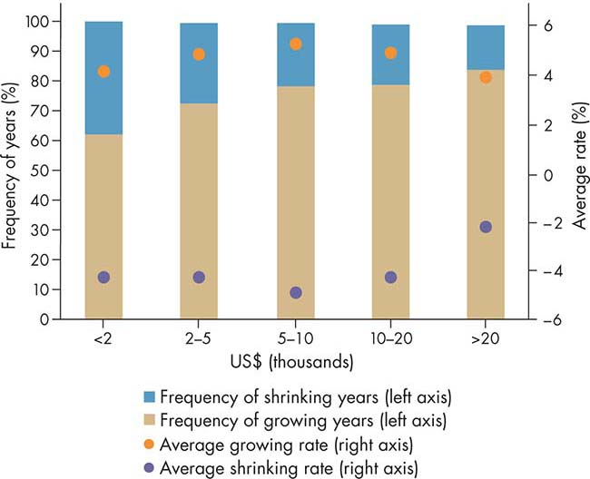
Sources: WDR 2017 team, based on Wallis 2016, with data from Penn World Table, version 8.0 (Feenstra, Inklaar, and Timmer 2015).
Note: The figure shows real GDP per capita (constant prices: chain series). Countries are first sorted into income categories based on their income in 2000, measured in 2005 U.S. dollars. Average annual growth rates are the simple arithmetic average for all the years and all the countries in the income category, without weighting. The sample underlying the figure consists of 141 countries, for which data are available from at least 1970 onward.
Coordination. Credible commitment alone, however, is not sufficient; coordination is also needed. For investment and innovation, firms and individuals must believe that others will also invest. Institutions can help solve market failures by coordinating both investment decisions and the expectations of market participants. The insight that a failure to coordinate investment activity can lead to underdevelopment is decades old.2 Consider the case in which large-scale factories are more efficient, but investing in them is not profitable for individual firms unless those firms invest simultaneously in a group. Perhaps the size of the market is too small to justify large-scale investments unless all the industries expand together, providing markets for one another. In such a situation, there are two possible outcomes, or equilibria. The first is one in which no firms invest in large-scale factories, and efficiency levels remain low. The second, a better outcome, is one in which firms are able to coordinate a simultaneous move to large-scale, efficient production. Such problems of coordination can occur in many contexts, ranging from finance and adoption of technology to innovation and industrial clusters to urban planning.3 In India, the lack of coordination among urban planners, real estate developers, and local politicians has prevented an efficient design of urban areas, hindering many cities from performing their roles in enhancing growth.
Cooperation. Finally, policy effectiveness to achieve equitable development requires cooperation, particularly citizens’ willingness to contribute to public goods and not free-ride on others. The extent to which societies can ensure opportunities for all individuals depends on their ability to invest in providing high-quality services such as health, education, and connectivity, and to ensure access to economic opportunities. For such investment to take place, resources need to be collected and redistributed. Indeed, no high-income country has achieved improvements in equity without significant taxation and public spending aimed at protecting individuals against shocks (such as illness or unemployment) and reducing welfare disparities within and across generations.4 In addition, for individuals to realize the returns of such investment, they need access to economic opportunities in adulthood, especially access to opportunities that allow them to use the human capital they have acquired. For a country to collect the taxes needed to fund investments in public goods, its citizens must be willing to comply and cooperate. Cooperation is enhanced by commitment because credible and consistent enforcement of laws is also needed to expand opportunities and level the playing field.
Sometimes, societies face a breakdown of cooperation. For example, Brazil, whose citizens organized to demand higher-quality public services, faced a problem common to many countries: the fragmentation of a social contract. In such cases, the low quality of service provision spurs the upper-middle classes to demand private services, which in turn weakens their willingness to cooperate fiscally and contribute to the provision of public goods—a perverse cycle. At other times, actors potentially affected by policies may be excluded from the design of those policies, thereby undermining their incentive to cooperate and weakening compliance. An induced perception that the EU was engaged in technocratic and exclusionary decision making and that some countries were benefiting disproportionately from the agreement, was among the reasons that led the United Kingdom to vote for “Brexit”—and led to the rise of populist parties in the world that challenge further integration.
Commitment, coordination, and cooperation are therefore essential institutional functions for making policies effective and thereby able to achieve development outcomes (table O.1).5 Yet, they are effectively fulfilled under only certain conditions. This Report proposes an analytical framework to advance understanding of how governance can help achieve these functions to promote development outcomes.
Table O.1 Three institutional functions—commitment, coordination, and cooperation—are essential to the effectiveness of policies
Function |
Examples of why these functions matter |
Commitment |
• Decision makers may want to spend windfall revenues now instead of saving them for others to spend in the future. • Politicians may resist continuing policies that have been working and prefer to pursue others that are associated with their political group. • Public service providers may push to renegotiate the terms of their contracts to their benefit when they know that the political cost of suspending service is high. |
Coordination |
• Investment and innovation are induced when individuals believe others will also invest. • Financial stability depends on beliefs about the credibility of policies; failures involve, for example, bank runs, where everyone believes the rest will rush to withdraw deposits. • Laws serve as a focal point for individuals to behave in certain ways, such as the convention of driving on the right side of the road. |
Cooperation |
• People have incentives to free-ride or to behave opportunistically—for example, by not paying taxes while enjoying the public services that other (tax-paying) individuals are funding. • Some actors potentially affected by policies may be excluded from their design, which weakens compliance and leads to fragmentation. |
Source: WDR 2017 team.
This Report argues that institutions perform three key functions that enhance policy effectiveness for development: enabling credible commitment, inducing coordination, and enhancing cooperation. But why are policies so often ineffective in doing so? A typical response among policy practitioners is that the right policies exist, ready to be implemented, but that what is missing is political will in the national arena. This Report argues that decision makers—the elites6—may have the right objectives and yet may still be unable to implement the right policies because doing so would challenge the existing equilibrium—and the current balance of power. Thus the balance of power in society may condition the kinds of results that emerge from commitment, coordination, and cooperation.
Ultimately, policy effectiveness depends not only on what policies are chosen, but also on how they are chosen and implemented. Policy making and policy implementation both involve bargaining among different actors. The setting in which (policy) decisions are made is the policy arena—that is, the space in which different groups and actors interact and bargain over aspects of the public domain, and in which the resulting agreements eventually also lead to changes in the formal rules (law). It is the setting in which governance manifests itself.7 Policy arenas can be found at the local, national, international, and supranational levels. They can be formal (parliaments, courts, intergovernmental organizations, government agencies), traditional (council of elders), or informal (backroom deals, old boys’ networks).
Who bargains in this policy arena and how successfully they bargain are determined by the relative power of actors, by their ability to influence others through control over resources, threat of violence, or ideational persuasion (de facto power), as well as by and through the existing rules themselves (de jure power). Power is expressed in the policy arena by the ability of groups and individuals to make others act in the interest of those groups and individuals and to bring about specific outcomes. It is a fundamental enabler of—or constraint to—policy effectiveness (box O.3).
Box O.3 The idea of power and the power of ideas
“The ideas of economists and political philosophers,” British economist John Maynard Keynes noted in The General Theory of Employment, Interest and Money, “both when they are right and when they are wrong, are more powerful than is commonly understood. Indeed, the world is ruled by little else.”a The notion of how ideas can influence historical paths in fundamental ways has long been studied by social scientists, not only from the perspective of ideology and culture but also from the viewpoint of “cultural entrepreneurship.”b It is important, however, to distinguish two specific ways—not exhaustive but fundamental—in which ideas influence policy making and effectiveness: ideas as knowledge and ideas as a means of shaping preferences and beliefs.
From the perspective of ideas as knowledge, over the past few decades the policy discussion has been influenced by the principles of “capacity building” in the form of knowledge sharing and dissemination of “best practices.” Ideas as knowledge undoubtedly play a role in strengthening the effectiveness of policies and enhancing the capacity to deliver on specific policy commitments.
But ideas also shape preferences and beliefs. Keynes ended his discussion of ideas by saying that “practical men, who believe themselves to be quite exempt from any intellectual influences, are usually slaves of some defunct economist. … But soon or late, it is ideas, not vested interests, which are dangerous for good or evil.” In the 18th century, Hume’s law established that no normative statement (such as a policy prescription) can be derived from a positive one (observation of facts) without a normative idea as an assumption. Policy prescriptions based on facts still require some normative notion—that is, an idea in the background. Acknowledging the importance of ideas, this Report discusses the relevance of shaping preferences and beliefs as a means of understanding the policy bargaining process.
It was Eric Wolf who, in 1999, called attention to the importance of understanding power and ideas as complementary to understanding social dynamics.c Indeed, following Michel Foucault, Wolf argues that the ability to shape other people’s beliefs is a means of eliciting an action from another person—an action the other person would not otherwise take. The ability to make others act in one actor’s interest or to bring about a specific outcome—the definition of power in this Report—is thus closely related to the notion of ideas as beliefs.
The dichotomy between ideas (ideology and culture) and power as a primary determinant of social dynamics is thus a false one. The idea of power cannot be understood without taking seriously the power of ideas.
Source: WDR 2017 team.
a. Keynes (1936, 383).
b. See, for example, Mokyr (2005) for a discussion of the “intellectual origins of modern economic growth.”
c. Wolf (1999). See also Barrett, Stokholm, and Burke (2001).
The distribution of power is a key element of the way in which the policy arena functions. During policy bargaining processes, the unequal distribution of power—power asymmetry—can influence policy effectiveness. Power asymmetry is not necessarily harmful, and it can actually be a means of achieving effectiveness—for example, through delegated authority. By contrast, the negative manifestations of power asymmetries are reflected in capture, clientelism, and exclusion.
Exclusion. One manifestation of power asymmetries, the exclusion of individuals and groups from the bargaining arena, can be particularly important for security (figure O.2). When powerful actors are excluded from the policy arena, violence may become the preferred—and rational—way for certain individuals and groups to pursue their interests, such as in Somalia. It can lead to failed bargains between participants in the bargaining arena (such as when peace talks between rival factions break down, or when disputants fail to reach an agreement).
Figure O.2 A more even balance of power is associated with positive security outcomes
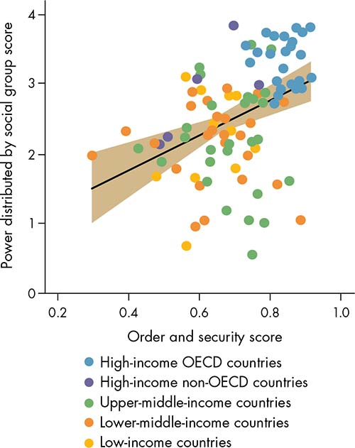
Sources: World Justice Project, Rule of Law Index 2015, Factor 5, “Order and Security” (consisting of “Crime is effectively controlled”; “Civil conflict is effectively limited”; “People do not resort to violence to redress personal grievances”); V-Dem, version 6 (consisting of “Power distributed by social group” in which a score of 0 indicates political power is monopolized by one social group, and a score of 4 indicates that social groups have equal political power).
Note: OECD = Organisation for Economic Co-operation and Development.
Exclusion, which can take the shape of lack of access to state institutions, resources, and services, often occurs along identity fault lines. The distribution of power among ethnic groups, measured by their access to central state power, is a strong predictor of violent conflict at the national level (whether in the form of repression by the state or rebellion against the state).8 Cross-country statistical analyses using the Ethnic Power Relations data set from 1945 to 2005 indicate that states that exclude large portions of the population based on ethnic background are more likely to face armed rebellions.9 The existence of norms that exclude certain groups, such as women and minorities, from the bargaining arena where disputes are settled tend to reinforce power asymmetries and perpetuate inequitable and insecure outcomes.10
Capture. A second manifestation of power asymmetries—the ability of influential groups to “capture” policies and make them serve their narrow interest—is helpful for understanding the effectiveness (or ineffectiveness) of policies in promoting long-term growth. In the 1990s, for example, some of Indonesia’s largest industrial groups had strong connections to President Suharto.11 Between 1995 and 1997, rumors about President Suharto’s health circulated on several occasions. During every episode, the closer that industrial groups were to the president, the more the value of their stock fell (figure O.3). The effects of capture can be quite costly for an economy. Politically connected firms are able to obtain preferential treatment in business regulation for themselves as well as raise regulatory barriers to entry for newcomers—such as through access to loans, ease of licensing requirements, energy subsidies, or import barriers. Such treatment can stifle competition and lead to resource misallocation, with a toll on innovation and productivity. Between 1996 and 2002, politically connected firms in Pakistan received 45 percent more government credit than other firms, even though they were less productive and had default rates that were 50 percent higher. Based on the productivity gap between firms, the annual cost of this credit misallocation could have been as high as 1.6 percent of the gross domestic product (GDP).12
Figure O.3 The value of political connections: Indonesia during President Suharto’s era
The closer that industrial groups were to the president, the more the value of their stock fell as rumors about the president’s health circulated
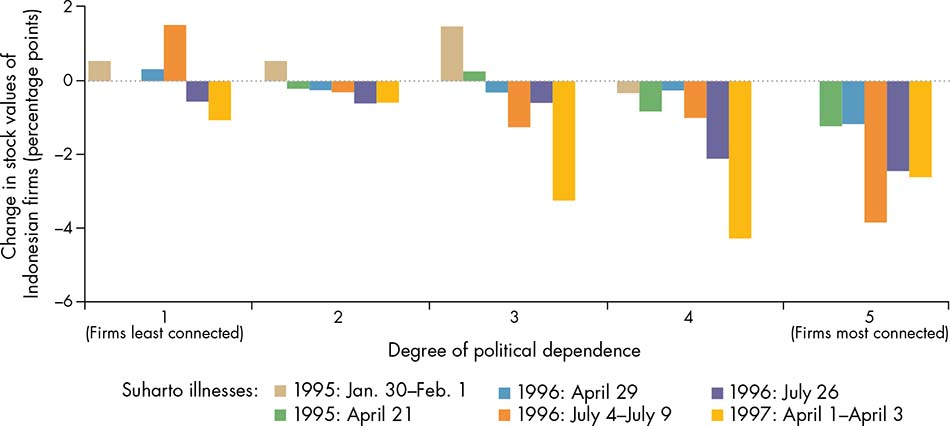
Source: Fisman 2001, figure 1.
Although it is possible for economies to grow without substantive changes in the nature of governance, it is not clear how long such growth can be sustained. Consider the case of countries apparently stuck in “development traps.” Contrary to what many growth theories predict, there is no tendency for low- and middle-income countries to converge toward high- income countries. The evidence suggests that countries at all income levels are at risk of growth stagnation. What keeps some countries from transitioning to a better growth strategy when their existing growth strategy has run out of steam? With a few exceptions, policy advice for these countries has focused on the proximate causes of transition, such as the efficiency of resource allocation or industrial upgrading. The real problem, however, may have political roots: powerful actors who gained during an earlier or current growth phase (such as the factor-intensive growth phase) may resist the switch to another growth model (such as one based on firm entry, competition, and innovation in a process of “creative destruction”). These actors may exert influence to capture policies to serve their own interests. Box O.4 presents an example of the political challenges in transitioning toward a different growth strategy—one that is related to investment in environmental sustainability.
Box O.4 Why some people see red when they hear “green growth”
“Green growth is about making growth processes resource-efficient, cleaner and more resilient without necessarily slowing them.”a For many reasons, environmental conservation is also good for long-term economic growth and development. Economic production depends on the stock of natural resources and on environmental quality (“natural capital”). Green growth strategies can increase natural capital by preventing environmental degradation. Environmental protection can also contribute indirectly to growth by correcting market failures. For example, a policy that addresses market failures leading to urban congestion can improve air quality and increase urban productivity. Greener growth can also improve well-being directly by improving air and water quality.
However, switching to greener growth strategies could impose short-term costs on some groups in society. Take the case of organic fertilizer. Smaller and more targeted doses of fertilizer (a “green” approach) are better for the environment in the long run, but conventional fertilizer is less costly and easier to use. Malawi faced this problem in 2005 when, to cope with food insecurity, it introduced a fertilizer subsidy for smallholder maize farmers. The intensive use of conventional fertilizer did lead to an immediate increase in farm output. However, because small farmers would not find it easy to adopt more organic fertilizers and greener approaches, efforts to phase out the subsidy for conventional fertilizers could hurt maize farmers for some years.b
It could be that the groups who stand to lose from green growth policies in the short term have an oversized influence over the policy arena, and so they are able to block reforms and undermine commitment. Because the costs are concentrated and many of the benefits from cleaner technologies are intangible and dispersed, the potential losers from such reforms are likely better able to organize. They also can form a strong electoral constituency. For example, Malawi’s fertilizer program has been popular among small farmers—an important constituency. At times, switching to greener growth strategies can entail losses for influential groups of consumers and firms. For example, South Africa announced an ambitious climate change plan in 2010 that would reduce the share of electricity generated by coal-fired plants in a country in which electricity is in short supply and coal is a relatively abundant source. The plan, despite being watered down a year later, has been opposed by consumers, labor unions, and business interests, particularly those in mining and heavy industry.c As these examples demonstrate, the design of green growth policies must take into account the potential resistance from those who will lose in the short term.
Sources: Hallegatte and others (2012); Resnick, Tarp, and Thurlow (2012).
a. Hallegatte and others (2012, 2).
b. Resnick, Tarp, and Thurlow (2012).
c. Resnick, Tarp, and Thurlow (2012).
Clientelism. A third manifestation of power asymmetries is clientelism—a political strategy characterized by an exchange of material goods in return for electoral support.13 This strategy is helpful for understanding why policies that seek to promote equity are often ineffective. Although pro-equity policies can be potentially beneficial for growth in the medium and long run, they can adversely affect the interests of specific groups, particularly in the short term. Those affected by equity-oriented policies may be concerned about losing rents or about seeing their relative influence reduced, and thus they may attempt to undermine the adoption or implementation of those policies. When societies have high levels of inequality, such inequalities are reflected in the unequal capacity of groups to influence the policy-making process, making inequality more persistent. Clientelism leads to a breakdown of commitment to long-term programmatic objectives, where accountability becomes gradually up for sale.
Clientelism can shape the adoption and implementation of policies in two main ways. In the first type of clientelistic setting, the relationship between public officials and voters becomes distorted. Instead of a dynamic in which the official is the agent of the voter, who monitors and sanctions the agent (figure O.4, panel a), the interaction becomes a bargain in which the politician “buys” votes in exchange for (usually) short-term benefits such as transfers or subsidies (figure O.4, panel b).14 These bargains tend to be more frequent when individuals have a higher time preference for the present with respect to the future. The poor and disadvantaged are particularly vulnerable to this sort of exchange because their pressing needs make their discount rates for the present higher than those of the better-off. In the second type of clientelistic setting, politicians become responsive to those groups that wield greater influence—for example, favoring the interests of teachers’ unions over those of students (figure O.4, panel c). This happens when public officials become dependent on the support of certain groups for their political survival, including the providers of public services.
Figure O.4 Principals, agents, and clients: Accountability for sale
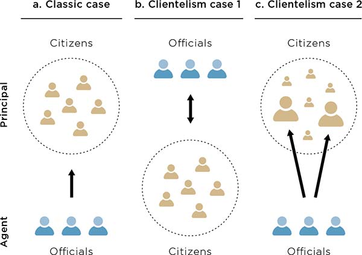
Sources: WDR 2017 team, extending World Bank 2003 and Khemani and others 2016.
Note: Arrows indicate who is responsive to whom.
The costs of this malfunction can be high. In exchange for their political support, service providers may extract rents through the diversion of public resources, or withhold their effort in the form of absenteeism or low-quality provision, or engage in corrupt practices, hampering the delivery of services such as education, health, or infrastructure. When groups in charge of providing services capture politicians, monitoring and sanctioning these providers are no longer credible, leading to a weak commitment to service delivery. A policy experiment in Kenya illustrates this point. It compared the impact of contract teachers in interventions managed by nongovernmental organizations (NGOs) and interventions run by the government. Test scores increased only in the intervention run by NGOs, indicating that NGOs were more credible in implementing sanctions—through firing—than the government.15 When commitment breaks down systematically, it can erode people’s incentives to cooperate, and some groups may opt out by demanding private services and looking for ways to avoid contributing to the provision of public goods.16 In clientelistic settings, states tend to have low tax revenues and provide few public goods, undermining economic activity and future taxation.
The development community has largely focused its reform attempts on designing best-practice solutions and building the capacity needed to implement them. Capacity, often considered a prerequisite for policy effectiveness, is certainly important, and in many cases it is even an overriding constraint. At a given point in time, it can be thought of as a stock. How and where to use such capacity, however, are also the product of a bargaining process. Even if physical and administrative capacity exists, policies may still be ineffective if groups with enough bargaining power have no incentives to pursue implementation. An example is the low investment in statistical capacity in Africa, which limits the ability to monitor policy effectiveness (box O.5). In addition, the existing power structures may be reinforced by the prevailing social norms, which are persistent shapers of behavior.17 Such norms may reinforce or undermine policy effectiveness.
Box O.5 The need to strengthen incentives to gather development data
For years, the development community has invested heavily in developing statistical capacity in Africa through economic resources as well as technical expertise. The results, however, have been disappointing.a Many countries in the region still lack the data to monitor socioeconomic conditions such as poverty, inequality, and service delivery. As a result, demands are growing for more money and more capacity building to solve this problem. And yet, forgotten is that to develop statistical capacity, countries need the political incentives to do so.
In many countries, political incentives lead those in power to avoid investing in capacity or to actively undermine capacity. Some elites in African countries consider high- quality data systems a tool that the opposition could use to audit their performance. Thus these elites have incentives to establish either weak statistical offices or partisan ones, staffed with political supporters rather than technical experts.b But, of course, this practice is not unique to Africa. The argument for using existing capacity is as valid as it is for building such capacity. In Latin America, a region well known for its capacity for data collection, there are several examples where the political dynamics led to a weakening of the credibility of official statistics.c
Source: WDR 2017 team.
a. Devarajan (2013).
b. Beegle and others (2016).
c. Economist (2012); Noriega (2012); Roitberg and Nagasawa (2016).
Thus investing in capacity may not be enough. Designing policies to improve security, growth, and equity requires understanding the balance of power among different actors. In the presence of powerful actors who can block or undermine policies, optimal policies from a strict economic standpoint (first-best policies) may not be the optimal implementable policies (second-best but feasible). Even when feasible, implementing what seem like first-best economic policies from a static perspective can lead to worse outcomes for society when such policies negatively affect the power equilibrium. For example, where governments are captured by firms and there is high inequality, unions may be the only way for workers to solve their collective action problem,18 even if representation is not perfect. In such cases, passing a law to make labor contracts more flexible may undermine union membership and lead to more inequality, which in turn can perpetuate the power of the wealthy.19
From the perspective of power asymmetries, efforts to strengthen the ability of institutions to effectively enable commitment, coordination, and cooperation call into question many traditional practices of the development community. Anyone seeking to design more effective policies may find it helpful to recognize how the distribution of power in the policy arena could affect policy design and implementation and to consider how the policy arena can be reshaped to expand the set of policies that can be implemented.
Reshaping the policy arena occurs when changes are made in who can participate in decision-making processes (the contestability of the policy arena), when incentives to pursue certain goals are transformed, and when actors’ preferences and beliefs shift.20 As an illustration, consider how countries are more or less effective at redistributing income through the fiscal system. The average measure of inequality (as captured by the Gini coefficient) based on individuals’ market income is 0.47 for developed countries and 0.52 for developing countries. After the effects of taxes and transfers are taken into account, the corresponding coefficients drop to 0.31 and 0.50, respectively. If the effect of publicly provided services (in particular, education and health) is also included, inequality falls further: to 0.22 in developed countries and to 0.42 in developing countries.21 The quantifiable redistributive capacity of these countries can be interpreted in different ways. It can be interpreted as the relative ability of different actors to influence and contest decisions about how resources are distributed in a given country. It can be interpreted as the incentives of governments to commit to the collection of taxes and allocation of spending—more checks and balances on power are associated with more redistribution.22 Or it can be interpreted as the preferences for redistribution in a given country.
Contestability. Who is included and who is excluded from the policy arena are determined by the relative power of the competing actors, as well as by the barriers of entry to participation (that is, how contestable the process is). A more contestable policy arena is one in which the actors or groups who have reason to participate in the decision-making process have ways to express their interests and exert influence. Because contestability determines who is included and who is excluded from the bargain, it is closely linked to the notion of inclusion. However, it also emphasizes the barriers to participation. Although the inclusion of more actors in the decision-making process is not necessarily a guarantee of better decisions, a more contestable policy arena tends to be associated with higher levels of legitimacy and cooperation. When procedures for selecting and implementing policies are more contestable, those policies tend to be perceived as “fair” and to induce cooperation more effectively.
Incentives. The incentives that actors have to comply with agreements are fundamental to enabling commitment in the policy arena. Credible commitment requires consistency in the face of changing circumstances. Incentives for actors to commit to agreements are thus crucial for effective policy design and implementation. Stronger incentives to hold policy makers accountable can also strengthen voluntary compliance because repeatedly delivering on commitment helps build trust in institutions.
Preferences and beliefs. The preferences and beliefs of decision-making actors matter for shaping whether the outcome of the bargain will enhance welfare and whether the system is responsive to the interests of those who have less influence. Aggregating preferences, for example, can increase the latter’s visibility. Because the preferences and beliefs of actors shape their policy goals, an important condition for policy effectiveness is the coordination of actors’ expectations.
This Report explores in depth how changes in contestability, incentives, and preferences and beliefs can enhance policy effectiveness for security, growth, and equity. Depending on the primary functional challenge—that is, whether a policy needs to enable commitment, coordination, or cooperation—these entry points may be different. Because the functional challenges are interdependent, the entry points act as complements.
Law is a powerful instrument for reshaping the policy arena. Although laws generally reflect the interests of those actors with greater bargaining power, law has also proven to be an important instrument for change. By its nature, law is a device that provides a particular language, structure, and formality for ordering things, and this characteristic gives it the potential to become a force independent of the initial powers and intentions behind it. Law, often in combination with other social and political strategies, can be used as a commitment and coordination device to promote accountability, and also to change the rules of the game to foster more equitable bargaining spaces. Effective laws are those that are able to shape bargaining spaces that increase contestability by underrepresented actors; that provide incentives by changing payoffs to lower the cost of compliance (or increase the cost of noncompliance); and that shift preferences by enhancing substantive focal points around which coordination can occur. State law, however, is but one of many rule systems that order behavior, authority, and contestation. Such legal and normative pluralism (box O.6) is neither inherently good nor bad: it can pose challenges, but it can also generate opportunities.
A more contestable policy arena tends to be associated with higher levels of legitimacy and cooperation. When procedures for selecting and implementing policies are more contestable, those policies tend to be perceived as “fair” and to induce cooperation more effectively.
Box O.6 Legal and normative pluralism
The phenomenon of “legal pluralism”—the coexistence of multiple legal systems within a given community or sociopolitical space—has existed throughout history and continues today in developing and developed countries alike. Modern forms of legal pluralism have their roots in colonialism, through which Western legal systems were created for colonists, while traditional systems were maintained for the indigenous population. As is well documented, that traditional or customary law still dominates social regulation, dispute resolution, and land governance in Africa and other parts of the developing world. In some cases, customary law, including a variety of traditional and hybrid institutional forms of dispute resolution, is formally recognized and incorporated into the legal system, such as in Ghana, South Africa, South Sudan, the Republic of Yemen, and several Pacific Island states. In other cases, such forms continue to provide the primary means of social ordering and dispute resolution in the absence of access to state systems that are perceived as legitimate and effective, such as in Afghanistan, Liberia, and Somalia. Customary legal systems reflect the dominant (yet evolving, not static) values and power structures of the societies in which they are embedded, and as such are often seen to fall short of basic standards of nondiscrimination, rights, and due process. The extent to which they are considered legitimate and effective by local users is an empirical question and a relative one in light of the available alternatives.
A further source of normative pluralism is the less visible but highly influential social norms—generally accepted rules of behavior and social attitudes within a given social grouping. A vast literature documents how social norms derived from communal and identity groups, professional associations, business practices, and the like, govern the vast majority of human behavior.a Social norms are a fundamental way of enabling social and economic transactions by coordinating peoples’ expectations about how others will act. Social sanctions, such as shame and loss of reputation, or, in some cases, socially sanctioned violence, are a powerful means of inducing cooperation to prevent what is regarded as antisocial and deviant behavior.b
Yet another source of normative pluralism is generated by today’s globally interconnected world in which a multitude of governmental, multilateral, and private actors establish and diffuse rules about a wide range of transactions and conduct (see chapter 9). Increasingly, local experiences of law are informed by these broader interactions covering topics such as trade, labor, environment, natural resources, financial institutions, public administration, intellectual property, procurement, utility regulation, and human rights. These interactions can take the form of binding international treaties and contracts (hard law) or voluntary standards and guiding principles (soft law). These rules may reinforce, complement, or compete with state law to govern public and private spaces.c
Source: WDR 2017 team.
a. Ellickson (1991); Sunstein (1996); Basu (2000); Posner (2000); Dixit (2004).
b. Platteau (2000b).
c. Braithwaite and Drahos (2000); Halliday and Shaffer (2015).
Law can play a role in making the policy arena more contestable. Enhancing the contestability of the arena encompasses both ex ante procedures (which relate to the means by which law is made and the extent to which it is participatory and transparent) and ex post ones (the extent to which law is applied consistently and fairly). If various actors believe the process is exclusionary or reflects only the interests of certain groups, they may not comply, or they may outright oppose it. Public hearings, stakeholder consultations, social audits, and participatory processes are some examples of instruments that can make the policy arena more contestable.23 In this case, law serves as a tool to promote accountability, change the rules of the game, or both. This function is embodied, for example, in the advocacy to adopt right-to- information laws.
Law can play a role in shaping the incentives of actors to comply with agreements by, for example, providing a credible threat of punishment or a credible commitment to delivering the reward for compliance. Law orders behavior through rules ranging from prohibiting bribery, to establishing licensing fees and business registration, to banning child marriage, as well as through the means to enforce these rules. Following Hart’s classic legal theory, laws induce particular behaviors of individuals and firms through coercive power, coordination power, and legitimating power.24
Law can effectively reshape preferences and coordinate expectations about how others will behave, serving as a focal point. In this way, law can act as a signpost—an expression—to guide people on how to act when they have several options, or (in economic terms) in the presence of multiple equilibria.25 Law provides a clear reference in the midst of diverging views. People comply with the law because doing so facilitates social and economic activities.
Ultimately, the rule of law—the impersonal and systematic application of known rules to government actors and citizens alike—is needed for a country to realize its full social and economic potential. But as Gordon Brown, the former prime minister of the United Kingdom, noted, “In establishing the rule of law, the first five centuries are always the hardest.” The ideal of the rule of law emerges from a home-grown (endogenous) process of contestation that shapes societies’ adherence to the principles of the rule of law over time—sometimes a very long time. Box O.7 discusses the challenging process of transitioning to the rule of law. Pragmatic policy design that takes into account how these different roles of law can bolster the effectiveness of development policies can ultimately move countries on a trajectory toward a stronger rule of law.
Box O.7 Transitions to the rule of law
Compared with the extensive literature on transitions to democracy, a surprisingly small amount of systematic work has been done on transitions to a modern rule of law. History reveals three separate types of transitions which one can learn from, while other paths might be possible: (1) the shift from a customary, informal, and often highly pluralistic system of law to a unified modern one; (2) how powerful elites come to accept legal constraints on their power; and (3) how countries successfully adapt foreign legal systems to their own purposes.
The shift from a customary or pluralistic system (or both) to a codified modern one is usually motivated, at base, by actors who view a single formal system as better serving their interests, particularly their economic interests in expanded trade and investment. Scale matters: at a certain point, the personal connections that characterize customary systems become inadequate to support transactions between strangers at great remove. However, the transition costs are high, and the customary rules are often preferred by the existing stakeholders. Therefore, political power is critical in bringing about the transition.
Formal law is usually applied first to nonelites (“rule by law”); the shift to “rule of law” occurs when the elites themselves accept the law’s limitations. Some have argued that constitutional constraints become self-reinforcing when power in the system is distributed evenly and elites realize that they have more to gain in the long term through constitutional rules.a What this theory does not explain, however, is why these same elites stick to these constraints when the power balance subsequently changes and one group is able to triumph over the others. Similarly, independent courts are always a threat to elite power; why do rulers come to tolerate them when they have the power to manipulate or eliminate them? This finding suggests that constitutionalism needs to be underpinned by a powerful normative framework that makes elites respect the law as such. Subsequent respect for law depends heavily on the degree of independence maintained by legal institutions that persist even after their normative foundations have disappeared.
Finally, as for the importation of foreign legal systems, perhaps the most important variable determining success is the degree to which indigenous elites remain in control of the process and can tailor it to their society’s own traditions. Thus Japan experimented with a variety of European systems before settling on the German civil code and Bismarck constitution at the end of the 19th century. Later, in the 20th century, China, the Republic of Korea, and other Asian countries similarly adapted Western legal systems to their own purposes. In other countries and economies, such as Hong Kong SAR, China, India, and Singapore, the colonial power (Great Britain) stayed for a long time and was able to shape the local legal norms in its own image. Even so, India today practices a far higher degree of legal pluralism than does the United Kingdom itself as part of the process of local adaptation. Less successful were countries in Sub-Saharan Africa, where customary systems were undermined by colonial authorities but not replaced by well-institutionalized modern systems.
Much more research is needed on the question of legal transitions. It is clear that a fully modern legal system is not a precondition for rapid economic growth; legal systems themselves develop in tandem with modern economies. It may be that the necessary point of transition from a customary to a formal legal system occurs later in this process than many Western observers have thought. But relatively little is known about the historical dynamics of that transition, and thus there is too little by way of theory to guide contemporary developing countries as they seek to implement a rule of law.
Source: Francis Fukuyama for WDR 2017.
a. See North, Wallis, and Weingast (2009).
How can strengthening the role of law to change contestability, incentives, and preferences and beliefs enhance policy effectiveness for security, growth, and equity? Take the case of security. Whether formally or informally, institutions of governance can solve commitment and cooperation problems in ways that create incentives to not use violence. Four main governance mechanisms matter for improving security outcomes: power sharing, resource redistribution, dispute settlement, and sanctions. Power sharing and resource redistribution are highlighted in the illustrations that follow.
Power sharing and resource redistribution can reduce exclusion and the incentives to engage in violence. Just as exclusion may lead to violence, mechanisms that encourage power sharing—such as legislatures that guarantee the representation of all factions—can reduce the incentives to engage in the use of force by raising the benefits of security. Power-sharing arrangements are especially relevant for societies divided along ethnic and religious identity lines, such as in Bosnia and Herzegovina, Northern Ireland, Kenya, Lebanon, and South Africa, but also in countries in which the conflict is a legacy of opposing ideologies. Power-sharing bargains that lead to peace and security typically take place between elites. Such bargains encourage cooperative behavior by providing elite groups with the incentives to compromise with one another and to inspire inclusion among their followers, and by offering alternative avenues for contesting power.
Mechanisms to redistribute resources can also reduce violence by reordering power and changing incentives. Redistributive arrangements include budget allocation, social transfers, and victim compensation schemes. Some government interventions to reduce urban crime in Latin America follow a common pattern of increasing security by reducing poverty and inequality. Employment in the public sector could also bring about stability by ensuring the loyalty of key constituencies. An example is the dramatic increase in the numbers and salaries of public employees following the uprisings in the Arab world in 2011 (figure O.5). Although this kind of political patronage can solve the first-order problem of violence, it can also lead to corruption and can have ruinous effects on budgetary sustainability and administrative efficiency.
Figure O.5 Recruitments of civil servants increased exponentially in Tunisia and the Arab Republic of Egypt in the aftermath of the Arab Spring uprisings of 2011
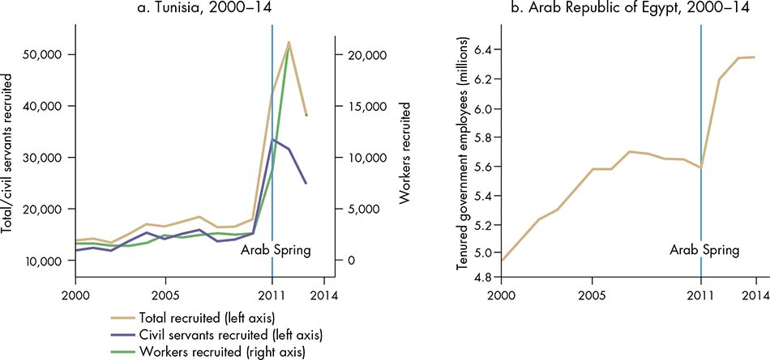
Sources: Tunisia: Brockmeyer, Khatrouch, and Raballand 2015; Arab Republic of Egypt: Bteddini 2016, based on figures from Egypt’s Central Agency for Organization and Administration (CAOA).
Implementable policies can help reduce capture, enhancing growth. Security is a precondition for prosperity, but it is not enough; economic growth must follow. When it comes to growth, if the possibility of capture looms large, policies that are first-best on the basis of economic efficiency may be less implementable than second-best ones. Adopting an implementable second-best design could therefore be more effective than choosing the seemingly first-best policy prone to capture. Moreover, when considering alternative policy designs, the possibility of future capture can be reduced by anticipating the possible effects of a policy on the balance of decision-making ability among the actors involved.
The experience of the Russian Federation and eastern European countries in their transition to market economies is illustrative.26 Compelled by the then-dominant economic argument that the privatization of state-owned enterprises (SOEs) was of first-order importance in enhancing economic efficiency, Russia and many eastern European countries focused on rapid, large-scale privatization of their SOEs. Although this approach may have made sense on purely economic grounds, the way in which the privatization wave was implemented created a new class of oligarchs that resisted the next generation of pro-competition reforms. As a result, many of these economies are still struggling with inefficient, oligopolistic industries. This is consistent with the view that reforms that create an initial concentration of gains may engender strong opposition to further reform from early winners.27 By contrast, Poland chose to focus first on reforms that made it easy for new firms to enter, and to privatize the existing firms more gradually. This sequencing created a class of young firms that were collectively interested in further reforms, while preventing the sudden emergence of an influential group of large firms that could block reforms.28
Better design of public agencies can help expand the set of implementable policies. How public officials are selected for service, for example, and the incentive structure they face within their organizations matter, as does accounting for existing norms of behavior. Establishing and maintaining greater accountability in public agencies can also help in balancing influence in the policy arena. Mechanisms that help give less powerful, diffuse interest groups, for example, a bigger say in the policy arena could help balance the influence of more powerful, narrow interest groups. However, participatory mechanisms in regulatory institutions are still relatively uncommon in low- and middle-income countries (figure O.6).
Figure O.6 Formal avenues for broad-based participation in regulatory decision making are limited in low- and middle-income countries
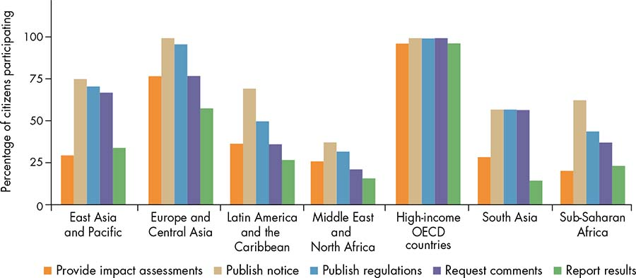
Source: WDR 2017 team, using data from the World Bank’s citizen engagement in rulemaking data.
Note: OECD = Organisation for Economic Co-operation and Development.
Private interests can at times undermine policy effectiveness, but capture is not an inevitable outcome of close business-state ties. As long as influence and incentives are balanced through robust public agency design and accountability mechanisms, firms and business groups can have a positive influence on policies aimed at economic growth. Contemporary case studies suggest that business associations have helped governments improve various dimensions of the business environment—such as secure property rights, fair enforcement of rules, and the provision of public infrastructure—through lobbying efforts or better monitoring of public officials.
Controlling clientelism can help solve commitment problems related to delivering on redistributive policies. Mechanisms that control clientelism can enhance equity by making commitment to long-term objectives credible in the political arena. At times, the incentives of elites may be aligned with taxation and public spending reforms in favor of the poor. For example, the first antipoverty programs in 19th-century Great Britain were pushed by the top 1 percent of landed elites. Against the backdrop of the French Revolution, and possible fear of revolts, these programs aimed to keep labor in the countryside and prevent it from migrating to urban areas.29 At other times, an increase in the participation of disadvantaged groups is needed to help change the incentives of actors who bargain over policies. Increasing the direct representation of disadvantaged individuals in legislative assemblies and other political bodies can improve policy makers’ commitments to reforms that improve equity. Direct participation in decision making can also improve cooperation. For example, in Ghana, when businesses are involved in the design of tax policies they are more likely to pay their taxes.30 Greater transparency and better information can also help to change incentives by monitoring the actions of political elites and service providers. For example, an intervention designed to strengthen local accountability and community- based monitoring in the primary health care sector in Uganda was remarkably successful in improving both health services and outcomes in the participating communities.31 However, reforms are often complex and involve frequent setbacks.
Over time, policies that effectively improve equity also reduce power asymmetries, making the policy arena more contestable. After a period of inclusive growth with greater income mobility, the growing middle class in Latin America began demanding better-quality services and demonstrating in the streets for better governance.32 Conversely, inequit-able growth and the concentration of wealth in the hands of a few led to consolidation of power and a perception of unfairness, and thus to weaker incentives for cooperation and coordination by those excluded from the benefits of development. It is thus necessary to understand how existing inequalities can be modified by reforms.
The nature of the policy arena is crucial to gauging whether actors will be able to reach and sustain agreements to enact welfare-enhancing policies. The actions that a proposed reform will trigger from other players in the arena are particularly important. The process of how reforms take place is embedded in the framework of the World Development Report 2017 (WDR 2017) and is discussed in box O.8 from the perspective of game theory. The discussion highlights how development reform involves playing “games” at two different levels, and actors in the quest for change often tend to neglect the game that really matters.
Box O.8 The “rules game”: Paying attention to where the action is
The framework described in this Report uses game theory—the branch of social sciences that studies strategic behavior—to understand the dynamics of power, policy, and reform. Although policy makers may not consciously think in terms of game theory, they play strategy games every day, and their actions can be understood using the precision and objectivity of game theoretic models. The framework laid out in this Report aims at understanding how governance affects development over time. For that purpose, the framework involves games played at two levels. The first-level game (the outcome game) takes place when, given a certain set of rules and policies, actors react by making decisions about investing, consuming, working, paying taxes, allocating budgets, abiding by the rules, and so on. Those decisions lead to the realization of outcomes (security, growth, equity). The framework suggests that there is, in addition, a second-level game (the rules game) in which actors bargain to redefine the policies and rules that shape subsequent reactions by actors in future realizations of the games.a
In the abstract, the rules and policies chosen should lead to the socially desired outcomes. Economists refer to the case in which someone can pick the ideal rules for the outcome game as the “mechanism design” approach, and the rules selected are those that a “benevolent dictator” or “social planner” would pick. Although this is a useful way to specify the ultimate goal of development, it is an insufficient guide to understanding the actual process of development. Mechanism design suggests that a reform is a once-and-done jump that takes place when someone imposes the “ideal” rules. It ignores the second-level rules game, the diversity of preferences and incentives, and the fact that different actors can have very different influences in the rules game. Moreover, in the process of reform and development, the rules game is where the action is.
Indeed, the rules game is where power asymmetries are manifested, whereby some actors have more direct influence (elites) and others have only indirect influence such as through voting (citizens). It has long been recognized that power is an important determinant of how a society functions and how the gains of economic activity are shared within and across nations. With game theory, one is able to formalize some of these difficult concepts and, in particular, the idea that, in the end, power depends on the circumstances, beliefs, and mores of ordinary people.
A key lesson that emerges from this approach is that rules that let players commit, coordinate, and cooperate tend to enhance efficiency in the outcome game. Ultimately, commitment devices allow actors to transform the game so that their incentives are aligned. To achieve coordination, policies need to create common knowledge that everyone will take the desirable action. Sometimes, this requires providing incentives for some actors to take the desirable action first so others will follow. To induce cooperation, policies need to put forth a credible mechanism of reward or penalty conditioned on players’ actions to prompt other actions yielding the jointly preferred outcome.
Over time, repeated play of the rules game can lead to the establishment of a government that is better able to enforce the rules impersonally—for example, by employing legislators, judges, and police officers who can administer a formal legal order, in particular by administering a system of contract law. Contract law is a system of formal rules that improves the efficiency of the outcome game by letting players commit to specific future actions.b When actors agree to a contract voluntarily, the result of a noncooperative interaction can lead to better outcomes for all. This analysis is also closely related to the concept of a “social contract” that goes back to ancient Greek thinkers. Social contracts that induce actors to abide by the rules voluntarily tend to be more efficient and sustainable. Underlying all stable societies is some form of social contract, which enables individuals to anticipate the behavior of others and react accordingly.
Source: WDR 2017 team.
a. In the WDR 2017 framework depicted in figure O.7, the right-hand side of the figure refers to the outcome game and the left-hand side to the rules game.
b. In a small social group, an informal system of rules can also encourage commitment. For example, if actor 1 does not follow through on an agreement with actor 2, actor 2 can punish actor 1 by gossiping about how actor 1 cheated.
Figure O.7 synthesizes the conceptual framework presented in this Report. It illustrates the dynamic interaction between governance and development. At its center is the policy arena, the space where actors bargain and reach agreements about policies and rules. Given a set of rules, the right-hand side of the framework shows how commitment, coordination, and cooperation among actors lead to specific development outcomes (the outcome game in box O.8). But actors can also agree to change the rules, which is illustrated in the left-hand side of the framework (the rules game in box O.8). Both changes in development outcomes (such as the composition of growth or the concentration of wealth) and changes in rules (both formal and informal) reshape the power asymmetries manifested in the policy arena.
Figure O.7 WDR 2017 framework: Governance, law, and development
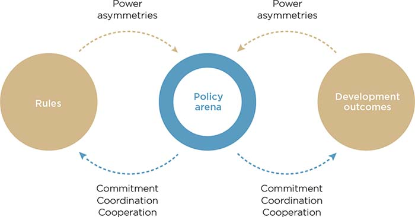
Source: WDR 2017 team.
Note: Rules refers to formal and informal rules (norms). Development outcomes, in the context of this Report, refers to security, growth, and equity. The actors in the policy arena can be grouped into elites, citizens, and international actors.
Changes in contestability, incentives, and preferences and beliefs are the key levers for correcting power asymmetries in the policy arena, leading more effectively to commitment, coordination, and cooperation. But how can these changes be brought about? This Report identifies three encouraging drivers for bringing about significant changes conducive to development: elite bargains (which take the distribution of power in the policy arena as a given); citizen engagement (which tries to change the distribution of power in the policy arena); and international interventions (which indirectly affect the distribution of power in the policy arena)—see box O.9.
Box O.9 Elites and citizens: Who is who in the policy arena?
Participants in the policy arena can be grouped into elites and citizens, according to their relative degree of influence in the policy-making process. What distinguishes elites from citizens is elites’ ability to directly influence the design and implementation of a certain policy. Elites can vary from one policy to another. For example, a group that is an elite in the area of health care may not be an elite in the area of crime control. The source of elites’ ability to influence policy comes not only from formal rules such as delegated authority (de jure power), but also from other means such as control over resources (de facto power). Thus even if the government changes, those who are able to influence decisions may stay the same; they keep their seat at the table. A few years ago, an entertainment magazine in a Latin American country captured this dynamic in an interview with an unlikely political observer, the chef of the presidential residence. After a tight election, the new president and his family had just moved into the residence. The interviewer asked the chef whether it was difficult for him to adjust the menu to the new presidential family’s tastes. “It is really not that problematic,” he reflected, “because even though the presidents change, the guests are always the same.”
Certainly, the dichotomy between elites and citizens is imperfect because it does not account for different degrees of relative power among individuals within those groups (elites or citizens), nor does it capture how their relative power differs from one policy to another. As Stephen Jay Gould notes in his classic text Time’s Arrow, Time’s Cycle: Myth and Metaphor in the Discovery of Geological Time, “Dichotomies are useful or misleading, not true or false. They are simplifying models for organizing thought, not ways of the world.”a The reality is much more complex and nuanced.
This Report views individuals as being on a continuum with respect to their position of power in the policy arena, and thus its definition of elites and citizens is a positive (rather than a normative) one. Elites are not necessarily bad or self-interested, and citizens are not necessarily good and public-spirited. Both groups exercise their influence as people do in other spheres of life. Understanding their motivations is what matters to anticipating their conduct.
Source: WDR 2017 team.
a. Gould (1987, 8–9).
All countries, regardless of their level of economic and institutional development, are subject to elite bargains. Change is unlikely to occur unless powerful actors—elites—in the country agree to that change. When influential actors resist change, suboptimal policies and governance institutions that are detrimental to development tend to persist. Under certain circumstances, however, elites may voluntarily agree to limit their influence in their own self-interest. Citizens can also organize to bring about change, playing an important role in applying pressure to influence the outcome of favorable bargains in the policy bargaining process. Moreover, governance does not occur solely within the boundaries of nation-states. Although international actors cannot engineer development from the outside, these transnational actors play an important role in influencing the domestic bargaining dynamics by strengthening (or weakening) local coalitions for reform.
Change occurs over time as coalitions are formed among different actors, but this is often a long and self-determining “endogenous” process. For example, success at achieving security in Somaliland arose from the collective action of a wide range of tribal and clan leaders. Sharing power among these actors helped reduce the incentives for violence by raising the benefits of security. In Nigeria, Muhammadu Buhari won the 2015 election by creating a broad coalition through a campaign platform focused on tackling corruption, potentially indicating an enhanced ability to overcome corrupt vested interests that benefit from oil rents. And in India, the Right to Information and Right to Education Acts, pushed through by grassroots coalition movements over many years, have helped poor citizens demand better services and education for their children, improving living conditions within slums.
In December 1976, a year after the death of Gen. Francisco Franco, who had been in power since the late 1930s, a referendum was held in Spain to introduce a political reform that would allow previously banned political parties to participate openly in Spain’s political life. To the surprise of many, the Cortes Generales—Spain’s parliament, which was led by members appointed by Franco—allowed this referendum, even though it would surely constrain their power and likely imply the end of the existing regime. Analysts have argued that members of the Cortes accepted the referendum because it was within the existing legal setting, which they had to protect. Gen. Pita Da Veiga, a conservative, minister of the navy, and personal friend of Franco, publicly declared, “My peace of conscience is rooted in the fact that the democratic reform is being made within the Franquista legality.”33 However, the Franquista legality he was praising was coming to an end precisely because of that reform, which received overwhelming public support: 97.4 percent of Spaniards voted in favor, with a turnout of 77 percent of registered voters.
Just as in the Spanish transition, elites frequently choose to constrain their own power. Changes to the “rules of the game” often reflect bargaining outcomes that result from elites acting in their own interests (box O.10). While seemingly counterintuitive, reforms that limit the arbitrary exercise of power today may be necessary for elites to maintain or enhance their power or to provide insurance against a loss of power tomorrow. Formal institutions—moving from deals to rules—can enhance the credibility of commitments, overcome coordination challenges among elite actors, and strengthen the stability of elite bargains. In cases of long-term successful transformation, elite actors have adapted to changing circumstances by generating more capable, contestable, and accountable institutions, and these institutions themselves have helped enable further development.
Box O.10 Who are elites, and what do they do? Results from a survey of elites in 12 countries
All social science disciplines and development practitioners recognize the importance of elite actors in determining development outcomes—from Aristotle’s “oligarchy,” to early 20th-century “elite theorists,”a to recent ambitious theories of economic and institutional coevolution.b The international community is increasingly looking at the consequences of different “political settlements,” which can be understood as elite bargaining equilibria that emerge at critical junctures in a country’s development.c Yet, the set of conceptual research tools available to scholars of elite bargaining and to development practitioners remains limited, as does agreement on exactly who are elites.
To help fill this gap, as part of the World Development Report 2017, the World Bank, in collaboration with the V-Dem Institute, has conducted expert surveys to generate cross-national indicators that enable comparison of who holds bargaining power and how they wield this influence. The surveys cover more than 100 years of data in 12 countries across six regions. The data help identify how the distribution of elites maps onto the national structure of bargaining power and the formulation and implementation of laws governing the exercise of power.
The survey reveals that the identity of the influential actors within a ruling elite coalition that decides policy at the national level differs greatly over space, time, and issue area. For example, although national chief executives are part of the elite ruling coalition in all 12 countries surveyed as of 2015, the other actors vary greatly in both number and representativeness (figure BO.10.1, panel a). With the exception of the Russian Federation, Rwanda, and Turkey, where the national chief executive monopolizes decision making, the ruling coalition in the other countries surveyed is quite varied. For example, in Bolivia the ruling coalition consists of legislators, party elites, local governments, labor unions, and civil society organizations.
Figure BO.10.1 Elite actors within national ruling coalitions vary greatly across countries and over time
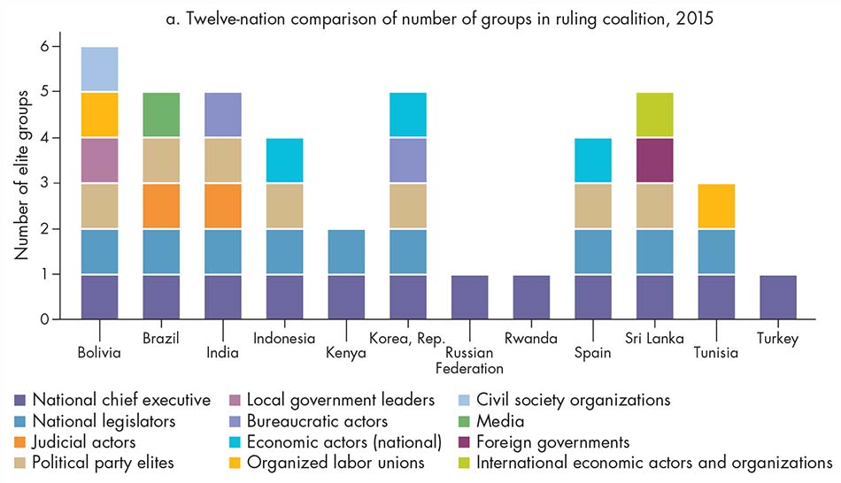
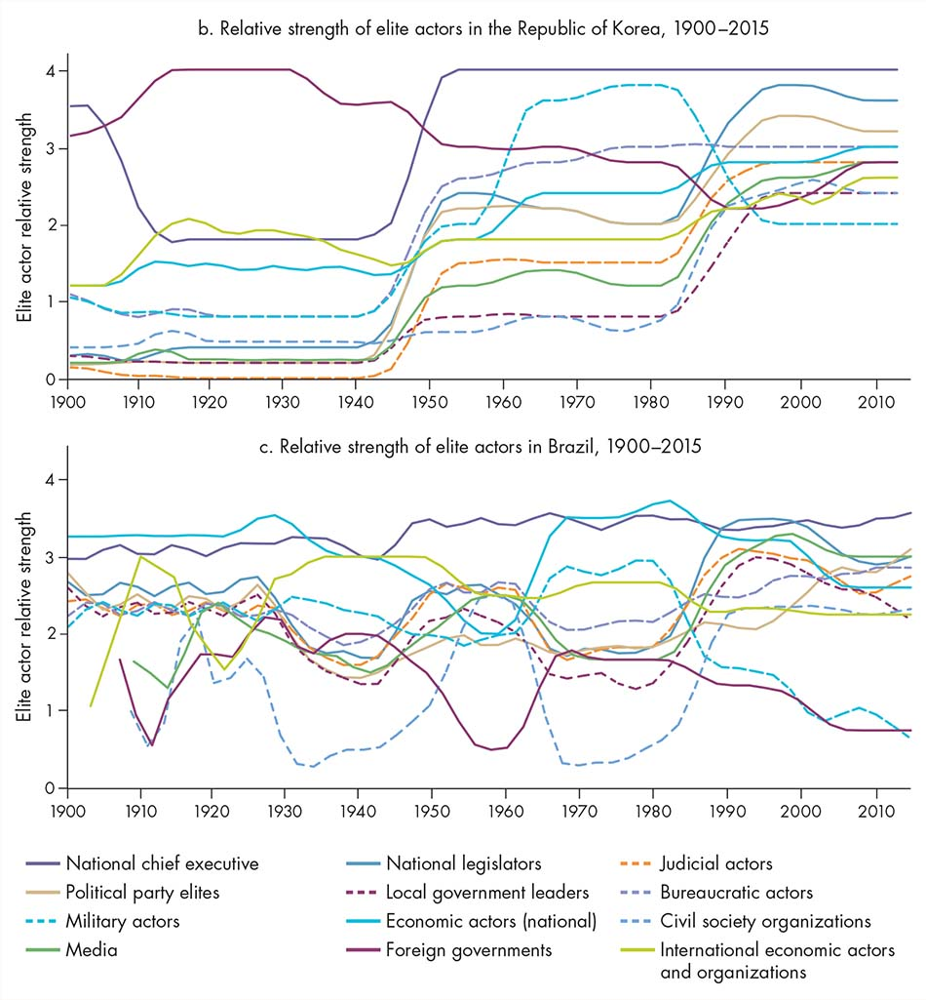
Source: WDR 2017 team.
Note: In this figure, relative strength is measured on a 0–4 scale, ranging from 0 (no power to influence decision making) to 4 (group has a lot of power to influence decision making on many issues). Panel a shows the number of elite groups that have relative strength greater than 3. For more information on specific variables and survey methodology, see World Bank and V-Dem (2016) and Coppedge and others (2015).
Ruling elites also differ within countries over time. In the Republic of Korea, during the Park regime (1963–79), the bargaining strength of military actors, bureaucratic actors, and economic actors was relatively high (figure BO.10.1, panel b). The transition to democracy after 1987 resulted in greater strength for new actors, particularly political parties, legislators, and the judiciary, but economic and bureaucratic actors remained highly empowered. By contrast, Brazil has experienced much more volatility in empowered elites, particularly before the 1990s (figure BO.10.1, panel c).
Source: WDR 2017 team.
a. See Michels ([1911] 1966); Pareto ([1927] 1971); and Mosca (1939).
b. See North, Wallis, and Weingast (2009) and Acemoglu and Robinson (2012).
c. Di John and Putzel (2009); Khan (2010); Parks and Cole (2010).
To maintain their own power and influence, coalitions of decision makers may have incentives to broaden the policy arena, including adding new actors to formal decision-making bodies and increasing accountability to other elites (horizontal accountability). Despite a preference for keeping coalitions small, elites may choose to broaden them to improve stability when the potential for conflict rises. Bringing new actors into credible institutions for contestation may be less costly than repressing them, and expanding the formal accountability space may help provide internal commitments that facilitate agreement.
Institutionalizing accountability to citizens (vertical accountability)—for example, through the introduction of elections or electoral reforms—may also be a rational elite strategy to maintain privilege, particularly in the face of rising demands from the opposing elite. When splits develop among elite actors, the introduction of vertical accountability mechanisms can enhance the bargaining power of one faction. Moreover, when bottom-up citizen movements threaten elite interests, elites may choose to introduce preemptive vertical accountability mechanisms to respond to societal demands before such pressure reaches a tipping point. In Europe in the 19th century, the extension of suffrage was heralded by the threat of revolution and social upheaval in the form of revolutionary activity in neighboring countries34 and strikes in the home country.35
Although elites often choose rules to maintain their position of power, sometimes—when acknowledging threats to their continued dominance—they may adopt rules to constrain their own influence as a type of political insurance. The hope is that those rules will bind not only them but also their successors. The adoption of cohesive and constraining institutions increases with the likelihood that the incumbent government will be replaced. This is an institutional variation on American philosopher John Rawls’s “veil of ignorance”: design institutions without knowing whether you will be subject to or master of them in the subsequent period.36 Fiscal transparency, for example, ties not only the hands of current elites but also those of successors. This is consistent with the actions of certain states in Mexico: although access to information and transparency laws was strengthened at the federal level after the political change in 2000, and more recently in 2016, such laws were more likely to be passed at the state level when opposition parties were stronger and when there was greater executive office turnover.37
Although elites often choose rules to maintain their position of power, sometimes—when acknowledging threats to their continued dominance—they may adopt rules to constrain their own influence as a type of political insurance.
Leaders can also spur elite-driven change by solving coordination challenges or by transforming the preferences and beliefs of followers. Transactional leaders use an array of bargaining tactics and strategies to promote coordination among elite actors and reach positive-sum outcomes (win-win solutions). These leaders change the incentives of other elites by taking into consideration who wins and who loses over time. By overcoming information and coordination challenges through political strategy, they can help find areas of agreement among conflicting parties without necessarily shifting norms or preferences. In the 1960s, U.S. president Lyndon Johnson’s deals, trades, threats, and ego stroking—political strategy—helped the U.S. Congress overcome a natural aversion to risk and pass civil rights legislation, a clear example of transactional leadership. Transformational leaders can, in addition, actually change elite preferences or gain following by shaping beliefs and preferences. They are entrepreneurial in coordinating norms and can effect large changes in society by changing the environment in which politics plays out, often by reducing the polarization of elites. In the 1990s Nelson Mandela provided a vision for South Africa based on charisma and moral persuasion, using powerful symbols to motivate and inspire his fellow citizens during the transition away from the country’s apartheid policies.
Individual citizens may not have the power to influence the policy arena to generate more equitable development on their own. However, all citizens have access to multiple mechanisms of engagement that can help them overcome collective action problems—to coordinate and cooperate—by changing contestability, incentives, and preferences and beliefs. Modes of citizen engagement can include elections, political organization, social movements, and direct participation and deliberation. Because all of these expressions of collective action are imperfect, they complement, rather than substitute for, one another.
Elections are one of the most well-established mechanisms available to citizens to strengthen accountability and responsiveness to their demands. When effective, they can help improve the level and quality of public goods and services provided by the state by selecting and sanctioning leaders based on their performance in providing these goods.38 This effect can be particularly strong at the local level, where voters might be better able to coordinate and shape the incentives of local politicians to deliver—including by curbing corrupt behavior. For example, evidence from Kenya suggests that multiparty elections successfully constrained the ability of leaders to divert public resources for partisan goals.39 However, elections alone are an insufficient mechanism to produce responsive and accountable governments. Although they have become the most common mechanism to elect authorities around the world, elections are increasingly perceived as unfair (figure O.8), and they are a limited instrument of control.
Figure O.8 Electoral democracies are spreading, but the integrity of elections is declining
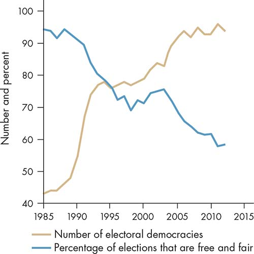
Sources: WDR 2017 team, based on Center for Systemic Peace, Polity IV (database), various years (for number of electoral democracies), and Bishop and Hoeffler 2014 (for free and fair elections).
Political organization can serve as a complementary mechanism to represent and articulate citizens’ collective interests, aggregate their preferences, and channel their demands in the policy-making process. For example, through parties, political organization can help solve citizens’ coordination problems and integrate different groups into the political process, encouraging a culture of compromise. According to the evidence, programmatic parties—those organized around a well-defined agenda of policy priorities—are associated with a higher likelihood of adopting and successfully implementing public sector reforms.40 However, ordinary citizens and marginalized groups sometimes find political parties unwilling to represent and articulate their demands, acting instead as “gatekeepers” to protect vested interests and existing power structures. This may help explain the disenchantment of citizens with political parties, which rank globally as the least trusted political institution.
Social organization can also help solve collective action problems by mobilizing citizens around specific issues. This mobilization can bring new demands and interests into the bargaining space, reshaping the preferences of actors and expanding the boundaries of the policy arena around previously neglected issues. Box O.11 explains how pressure from social organization by international and domestic women’s groups contributed to the achievement of female suffrage in Switzerland, which led in turn to other important policy changes for gender equality. Actors in civil society and the media can play a key role in fostering policies that strengthen transparency and more widely disseminate information. Increasing the availability of reliable information—such as generating evidence on the performance of public officials—and increasing the accessibility of that information—such as strengthening the independence of media outlets or aligning the targeting and timing of information with the political process—can be fundamental first steps toward promoting greater accountability and government responsiveness.41 However, global trends reveal that after its continual expansion over the past decades, civic space has shrunk in the past few years (figure O.9). Many governments are changing the institutional environment in which citizens engage, establishing legal barriers to restrict the functioning of media and civic society organizations and reducing their autonomy from the state.
Box O.11 Direct democracy delayed women’s voting rights in Switzerland
Most European countries enfranchised women during the first decades of the 20th century. However, it was not until 1971 that Swiss women were first allowed to vote in federal elections, 65 years after the first country in Europe—Finland—did so. And yet Switzerland has had a tradition of direct democracy for centuries. What explains the late enfranchisement of Swiss women?
To change the constitution, the political system required a national referendum in which only men were allowed to vote. Several petitions and motions initiated by women’s groups in the first half of the 1900s were unsuccessful in achieving women’s suffrage. Who participated in the process to change the rules was thus an important determinant of which rules persisted. But so were the existing social norms and the lack of incentives for change. Reflecting those deeply held norms, Switzerland also lagged behind most Western countries in removing other legal gender inequalities, notably those preserving the legal authority of the husband.
Under heightened international pressure, Switzerland was close to a breakthrough in guaranteeing women’s rights in 1957, when, for the first time, the Swiss Federal Council called for a national referendum on women’s suffrage. “If Switzerland had not been a direct democracy, women’s right to vote would have taken effect immediately,” one study notes.a The mandatory national referendum took place in 1959 when 69 percent of the entirely male electorate voted against the constitutional amendment. Still, women gained the right to vote on cantonal affairs in three Swiss cantons (Geneva, Vaud, and Neuchâtel) in 1959–60. It was not until 1971 that the majority of Swiss men voted in favor of women’s suffrage. Reform coalitions among many actors played a significant role in bringing about this change, including international influence and domestic action by women’s groups such as the Swiss Association for Women’s Suffrage.
The change in female suffrage in Switzerland made it possible for new actors—women, in this case—to participate in the process of policy design and implementation, changing the incentives of politicians to be responsive to their preferences and interests. It also reflected a change in societies’ norms with respect to women’s rights. This led to further important policy changes in the 1980s. An amendment to the constitution to guarantee equal rights of all Swiss men and women was approved in a referendum in 1981. A few years later, in 1985, women were granted equal rights in marriage to men, eliminating legal requirements such as wives’ need to have their husbands’ permission to work outside the home, or to initiate legal proceedings, or to open a bank account.b
Sources: Stämpfli 1994; World Bank, Women, Business, and the Law (database), 2015.
a. Stämpfli (1994, 696).
b. World Bank (2016a).
Figure O.9 After decades of progress, civic space is shrinking globally
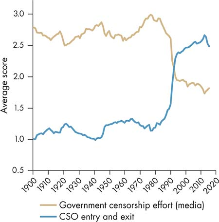
Source: WDR 2017 team, using data from V-Dem (database), 2016.
Note: The average is based on a sample of 78 countries for which there is consistent data for all years presented. The “CSO entry and exit” variable is measured on a 0–4 scale, ranging from 0 (more constrained) to 4 (less constrained). The “government censorship effort (media)” variable is reversed and measured on a 0–4 scale, ranging from 0 (less censorship) to 4 (more censorship). More information on specific variables and survey methodology can be found in World Bank and V-Dem (2016) and Coppedge and others (2015). CSO = civil society organization.
Although social organization may succeed in giving voice to powerless groups and putting pressure on public authorities, trade-offs can be associated with the proliferation of competing interests in the policy arena. Public institutions may be quickly overloaded with multiple pressures, undermining the coherence and effectiveness of public policies. Moreover, not all social organization is necessarily motivated by a vision of a more equal and just society. In some cases, social organization can be used by narrow interest groups for exclusionary or violent purposes.
Public deliberation—spaces and processes that allow group-based discussion and weighing of alternative preferences—can also help level the playing field in the policy arena. Citizens’ participation in local governance can be instrumental in improving the quality of deliberation and the legitimacy of decisions by clarifying the needs and demands of local constituencies. However, participatory approaches to development sometimes fail to consider the possibility of civil society failures in which, in weakly institutionalized environments, the poor are less likely to participate, and participatory mechanisms can be captured by local elites.42 Such failures are not necessarily ameliorated by the availability of new technologies. As discussed in WDR 2016 on the digital divide,43 information and communication technologies might actually reinforce socioeconomic inequalities in citizens’ engagement. In Brazil, for example, the use of internet voting on municipal budget proposals revealed stark demographic differences between online and offline voters; online voters were more likely to be male, university-educated, and wealthier.44
Ultimately, all expressions of citizens’ collective action, including voting, political parties, social movements, civic associations, and other less conventional spaces for policy deliberation, are imperfect. Therefore, citizens, to strengthen their influence in the policy arena, need to engage through multiple mechanisms designed to solve collective action problems. This strategic combination can maximize the chances to effectively bring about changes in contestability, incentives, and preferences and beliefs.
The dynamics of governance do not occur solely within the boundaries of nation-states. Countries today face an interconnected, globalized world characterized by a high velocity and magnitude of flows of capital, trade, ideas, technology, and people. The world nowadays is very different from the one in which today’s developed countries emerged: in those days, cross-border flows were low; the countries received no aid; and they were not subject to a proliferation of transnational treaties, norms, and regulatory mechanisms. For developing countries, the era of globalization and “global governance” presents both opportunities and challenges.
As the flows across borders expand, so too do the instruments and mechanisms that are used to manage these flows. To influence domestic policies and governance, international actors can introduce transnational rules, standards, and regulations (hereafter referred to as transnational rules). These rules can help induce credible commitment to domestic reform through trade and regional integration incentives. They also can help achieve international cooperation on global goods by changing incentives—such as preventing races to the bottom when countries compete to attract investment and gain access to markets, leading to reductions in corporate tax or environmental and labor standards. And they can serve as focal points for domestic actors to shift preferences and improve coordination by changing ideas and diffusing norms.
International agreements on economic integration can provide credible commitments that domestic actors will follow through on economic reforms. The success of the European Union integration process demonstrates the power of these types of inducements. Prospective member countries must change domestic rules to abide by the 80,000 pages of regulations in the EU’s acquis communautaire. For the countries that decided to undergo these changes, the potential economic benefits of joining the EU outweighed any loss of domestic autonomy in specific areas, and the benefits of accession were used by elites to overcome domestic resistance to the required reforms. Moreover, for member countries, accession helped change elite incentives by changing the relative power of domestic actors because some parties benefited much more than others. Meanwhile, EU membership contributed to the institutional consolidation of former dictatorships in the European periphery, such as Greece, Portugal, and Spain in the 1980s. It also played a role in the transition in central and eastern Europe after the elimination of the communist regimes in the 1990s and 2000s.
Since the end of World War II, official development assistance (ODA) or “foreign aid” has been one of the most prominent policy tools used by advanced economies to induce security, growth, and equity outcomes in developing countries.45 Although the literature on aid effectiveness is voluminous, it tends to be inconclusive. Ultimately, the literature suggests that aid is neither inherently good nor inherently bad for development; what matters is how aid interacts with the prevailing power relations and affects governance.
In some cases, donor engagement supports the emergence of more accountable and equitable governing arrangements that become embedded in the domestic context. For example, evidence from a community-driven reconstruction program in Liberia suggests that introducing new institutions at the local level can have an effect on social cooperation that will persist beyond completion of the program.46 In other cases, aid can undermine the relationship between the state and its citizens by making the state less responsive to their demands. For example, the more that states rely on revenues from the international community, the fewer incentives they have to build the public institutions needed to mobilize domestic revenues through taxation. And the less that states rely on their domestic tax base, the more state-citizen accountability erodes.47
Currently, aid represents more than 10 percent of GDP for half of all low-income countries and over 30 percent of total revenues for 26 countries (figure O.10). The empirical evidence linking aid flows to decreased taxation is mixed (box O.12). Aid has thus been likened to a natural resource curse: a windfall of unearned income that may enable inefficient government spending, unconstrained by the kind of state-citizen social contract that engages citizens in policy discussions and makes the policy arena more contestable.48
Box O.12 Domestic resource mobilization, foreign aid, and accountability
There is a growing consensus that increasing domestic resource mobilization can enhance accountability, particularly if such efforts are explicitly linked to the provision of public goods. If ruling elites need to depend on broad-based taxation, they are more likely to include citizens and other elites in policy bargains. But does foreign aid undermine domestic resource mobilization—and thus accountability to citizens?
Studies testing that hypothesis initially showed a negative correlation between the two.a More recently, these studies have been refuted by the adoption of different data setsb or different econometric techniques.c Although the behavioral effect of aid flows undermining accountability has been tested and isolated in experimental settings,d in reality the relationship is more complex and seems to depend on three factors: the type of aid (for example, whether grant or debt, budget support, or project-specific); the contemporaneous effects of conditional policies associated with the aid; and, more important, the governance setting specific to each country. Moreover, even if aid were to reduce incentives to mobilize domestic resources, the removal of aid may result in societally suboptimal taxation policies to raise revenues, leaving the poor worse off.
The effects of domestic resource mobilization on accountability depend on how domestic funds are mobilized. Many available taxes may not have the capacity to enhance accountability, such as resource taxes, or may have strong distortionary effects, such as trade taxes. International corporate tax competition and trade liberalization have also diminished states’ capacity for domestic resource mobilization (a race to the bottom). In settings with low savings rates or the potential for capital flight and tax evasion, consumption taxes are the most likely to be effective, but also the most likely to be regressive. Frequently in these cases, domestic resources are mobilized in ways that may increase poverty—for example, by increasing consumption taxes—without enacting specific offsetting mechanisms of compensation for the poor. Indeed, based on household survey data for 2010, fiscal policy itself increased the US$2.50 per day poverty headcount ratio in 9 out of 25 countries analyzed.e In other words, more poor people were made poorer through the taxing and spending activities of governments than benefited from those activities.
Notwithstanding the importance of mobilizing domestic resources to expand responsiveness and accountability to citizens, many countries may be too poor to have the capacity to collect enough revenues to address important development goals; they may harm the poor in the process of collecting domestic resources; or they may be politically unable to pass reforms to increase revenues. In countries in which poverty rates are higher than 65 percent (mainly in Sub-Saharan Africa), for example, there is no feasible redistribution scheme that allows eradicating poverty only by transferring resources domestically from the rich to the poor.f Moreover, in many developing countries poor individuals are often impoverished by the fiscal system when both government taxation and spending are taken into account.g Finally, political power might be concentrated in the hands of a few rich individuals whose interests collide with those of the poor. In such instances, where there is need to mobilize a larger set of individuals to counterweigh the political influence in the hands of the few, domestic resource mobilization might be very difficult to achieve.h
Source: WDR 2017 team.
a. Most notably, Gupta and others (2004).
b. Morrissey and Torrance (2015).
c. For example, Clist and Morrissey (2011) invalidate the contemporaneous negative correlation found in Gupta and others (2004) by introducing a lagged effect of aid and taxation. They conclude that the relationship is negligible.
d. Paler (2013); Martin (2014).
e. Lustig (2016).
f. Ravallion (2010); Ceriani, Bolch, and López-Calva (2016).
g. Lustig (2016).
h. Ceriani, Bolch, and López-Calva (2016).
Figure O.10 Aid is a large share of GDP and government revenue in many developing contries
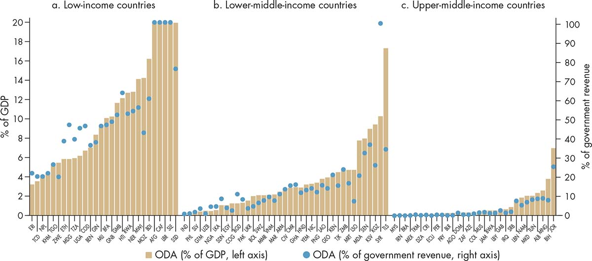
Sources: WDR 2017 team. Official development assistance (ODA) data: Organisation for Economic Co-operation and Development; government revenue data: IMF, World Economic Outlook, various years.
Note: The graphs show ODA from all donors to all recipients in low- and middle-income countries with a population of at least 1 million. Figures for ODA (percent of GDP) are capped at 20 percent of GDP for the sake of visualization. The underlying uncapped data are Afghanistan, 24.1 percent; Central African Republic, 35.4 percent; Liberia, 37.0 percent; and Malawi, 21.8 percent. Figures for ODA (percent of government revenue) are capped at 100 percent for the sake of visualization. The underlying uncapped data are Afghanistan, 105.2 percent; Central African Republic, 260.6 percent; Liberia, 126.0 percent; and Sierra Leone, 143.2 percent.
For a long time, the need for intervention was justified on the basis of classic market failures in which governments intervene to produce socially desirable outcomes that cannot be achieved by relying solely on markets. Later, the literature revealed the existence of government failures in which government interventions also failed because of lack of capacity, informational asymmetries, or distorted incentives.49 One of the issues that this Report analyzes is the difficulties faced by the international community when trying to influence change in the presence of government failures. Indeed, many times well-intentioned interventions become ineffective because they reinforce an equilibrium that sustains the outcome the intervention attempted to change. These situations can arise from interventions that do not take into account the existing power balance.
Such development assistance challenges are not unavoidable or intractable. Like market failures and government failures, they can be addressed. Development assistance can be more effective when donor engagement supports the emergence of more accountable and equitable governing arrangements that become embedded in the domestic context—for example, by making relevant information available to citizens to strengthen their capacity to hold political leaders accountable.50 When and how these positive effects emerge, however, is difficult to predict in advance because of the web of intersecting and evolving factors that determine how donor initiatives engage with local political dynamics.
The development community has recently been engaging in efforts to “think politically” about aid. However, many of the operational imperatives that arise from greater attention to development assistance challenges—such as the need to increase flexibility of implementation, tolerate greater risk and ambiguity, devolve power from aid providers to aid partners, and avoid simplistic linear schemes for measuring results—run up against long-established bureaucratic structures, practices, and habits. The way forward may require a more adaptive or agile approach in which strategies are tried out locally and then adjusted based on early evidence. Moving beyond technocratic approaches and learning how to take into account the openings and constraints presented by shifting politics are key to the ability of foreign aid to induce and sustain governance reforms that promote development.
More than 70 years after the Bretton Woods Conference that launched the World Bank and the International Monetary Fund, the international community continues to recognize that promoting sustained development requires taking seriously the underlying determinants related to governance. Future progress will require a new framework and new analytical tools to harness the growing evidence on what has worked and what has not.
Policies do not occur in a vacuum. Rather, they take place in complex political and social settings in which individuals and groups with unequal bargaining power interact within changing rules as they pursue conflicting interests. This Report shows that taking into account how the distribution of power in the policy arena enables or constrains institutions to effectively promote commitment, coordination, and cooperation is critical to ensuring progress toward achieving security, growth, and equity.
Past World Development Reports have shed light on how to solve some of the most challenging problems in key areas of development, such as jobs, gender equality, and risk management. This WDR is part of a trilogy of recent reports, alongside Mind, Society, and Behavior (2015) and Digital Dividends (2016), that examine how policy makers can make fuller use of behavioral, technological, and institutional instruments to improve state effectiveness for development. This Report starts by acknowledging that policies such as those to strengthen labor markets, overcome gender barriers, or prepare countries against shocks are often difficult to introduce and implement because certain groups in society who gain from the status quo may be powerful enough to resist the reforms needed to break the political equilibrium. Successful reforms thus are not just about “best practice.” They require adopting and adjusting institutional forms in ways that solve the specific commitment and collective action problems that stand in the way of pursuing further development.
The WDR 2017 proposes three simple principles to guide those thinking about reform. First, it is important to think not only about what form institutions should have, but also about the functions that institutions must perform—that is, think not only about the form of institutions but also about their functions. Second, it is important to think that, although capacity building matters, how to use capacity and where to invest in capacity depend on the relative bargaining powers of actors—that is, think not only about capacity building but also about power asymmetries. Third, it is important to think that in order to achieve the rule of law, countries must first strengthen the different roles of law to enhance contestability, change incentives, and reshape preferences—that is, think not only about the rule of law but also about the role of law (table O.2).
Table O.2 Three principles for rethinking governance for development
Traditional approach |
Principles for rethinking governance for development |
Invest in designing the right form of institutions. |
Think not only about the form of institutions, but also about their functions. |
Build the capacity of institutions to implement policies. |
Think not only about capacity building, but also about power asymmetries. |
Focus on strengthening the rule of law to ensure that those policies and rules are applied impersonally. |
Think not only about the rule of law, but also about the role of law. |
Source: WDR 2017 team.
When one is facing a specific policy challenge, what do these principles mean in practical terms? This Report identifies four key insights. Box O.13 offers a simple diagnostic road map for bringing these insights more concretely into development programming in an effort to enhance effectiveness.
Box O.13 What does the WDR 2017 framework mean for action? The policy effectiveness cycle
This Report argues that policy effectiveness cannot be understood only from a technical perspective; it is also necessary to consider the process through which actors bargain about the design and implementation of policies within a specific institutional setting. The consistency and continuity of policies over time (commitment), the alignment of beliefs and preferences (coordination), as well as the voluntary compliance and absence of free-riding (cooperation) are key institutional functions that influence how effective policies will be. But what does that mean for specific policy actions?
Figure BO.13.1 presents a way to think about specific policies in a way that includes the elements that can increase the likelihood of effectiveness. This “policy effectiveness cycle” begins by clearly defining the objective to be achieved and then following a series of well-specified steps:
Step 1. Diagnose. Identify the underlying functional problem (commitment, coordination, cooperation).
Step 2. Assess. Identify the nature of power asymmetries in the policy arena (exclusion, capture, clientelism).
Step 3. Target. Identify the relevant entry point(s) for reform (contestability, incentives, preferences and beliefs).
Step 4. Design. Identify the best mechanism for intervention (R1, R2, R3).
Step 5. Implement. Identify key stakeholders needed to build a coalition for implementation (elites, citizens, international actors).
Step 6. Evaluate and adapt.
Source: WDR 2017 team.
The first challenge is to identify the underlying functional problem. Diagnostic approaches should home in on the specific commitment, coordination, and cooperation problems that stand in the way of achieving socially desirable outcomes, and on the ways that power asymmetries in the policy arena constrain these functions. In addition to constraints that are typically considered—such as physical and administrative capacity—policies may still be ineffective if groups with enough bargaining power have no incentives to pursue adoption or implementation. Taking into account power asymmetries means focusing on implementable (if not necessarily ideal) policies that can generate incremental progress toward inclusive growth and equitable development.
The second challenge is to identity the different levers of change that can help reshape the policy arena to expand the set of policies that can be implemented. Instead of taking the existing policy-making environment as a given, reformers would analyze how to lift the existing constraints to expand the space of what is politically feasible. Different levers of change can contribute to this shift. In looking at the contestability of the policy arena, reformers would take into account that incentives, as well as the preferences and beliefs of actors, are instrumental to understanding what agreements are feasible.
The third challenge is to identify the relevant interventions or changes in rules that best solve the specific functional challenges. When thinking about potential reforms of policies, actors will find it helpful to consider three “levels” of rules.51 First-level rules, or R1, refer to specific policies (for example, the percentage of budget allocated to health care). Midlevel rules, R2, refer to organizational forms—such as the independency of the judiciary and central bank. Higher-level rules, R3, relate to “rules about changing rules”—namely, constitutional and electoral law. The “form” of policies is certainly not to be ruled out, but it is also crucial to think about their “function.” For example, beyond what a fiscal rule looks like, is commitment to the rule credible? Some functional challenges may require a combination of reforms at all three rule levels. Finally, when designing and evaluating policies, anticipating opposition and considering potential unintended consequences must be part of the process (box O.14). Particularly when thinking about evaluation, it must be understood that trajectories may not be linear and thus assessment requires complex methods. Anticipating the changing balance of power around the reform process and adopting an adaptive approach, such as building coalitions in anticipation of the reform, can reduce the risk of reversal. Driving sustainable change requires considering the potential opportunities presented by elite interests, the opportunities for citizen collective action, and the role of international influences.
Box O.14 Lessons for reformers from the “rules game”: How is legitimacy ultimately built?
This Report encourages reformers to pay attention to the details of the rules game so they can avoid two basic mistakes.
First, an act of reform undertaken by one player in a rules game can backfire if the player does not consider the actions the reform will trigger in other players. For example, an outsider might advise the legislature on the benefits of contract law. In response, the legislature might pass a law that tells the courts to enforce contracts; the executive head of government might promise to promote judges who follow the executive’s instructions to favor some people in court cases; wealthy elites might pay the executive to receive special treatment in the courts; the executive might use the money from the elites to finance an upcoming political campaign; and, as a result, citizens might not trust the courts to enforce contract law. Ultimately, this reform did not produce the anticipated benefits, and it may have made matters even worse. The courts, which previously offered equal protection under criminal law, may no longer be able to punish wealthy offenders who commit crimes.
Second, even if it produces better payoffs today, a reform could also backfire if it generates worse outcomes for the rules game that will be played in the future. This can be particularly important in terms of what political scientists call legitimacy, whose manifestation is voluntary acceptance of the rules and compliance with them. The citizens of a nation may be willing to delegate enough power to their government to make it a dominant player in the rules game for the nation, but only as long as they feel that the government’s use of that power is legitimate.
The functional approach in this Report allows a clearer understanding of the concept of legitimacy. The legitimacy of a government can be derived from three sources. Repeated commitment builds legitimacy in terms of outcomes.a When a government repeatedly delivers on its commitments, it legitimizes itself, such as by reliably providing public services. Legitimacy can also come from a perception of fairness in the way in which policies and rules are designed and implemented—that is, process legitimacy. Finally, legitimacy can also be relational, where sharing a set of values and norms encourages individuals to recognize authority. Outcome, process, and relational legitimacy form the three types of legitimacy identified in this Report. Legitimacy matters for cooperation and coordination because it implies voluntary compliance with an act of authority. Even if a government delivers on its commitments and is able to coerce people into complying, there may be “legitimacy deficits” if the process is perceived as unfair and people may not be willing to cooperate and would rather opt out of the social contract.
Source: WDR 2017 team.
a. Outcome legitimacy is related to the notion of trust, which is defined in this Report as the probability that an actor assigns to other actors of delivering on their commitment, conditional on their past behavior.
When can meaningful changes be made in the nature of governance? The development path is bumpy: shocks (such as terms of trade shocks and natural disasters) and gradual developments (such as urbanization or a growing middle class) alter the bargaining influence and preferences of actors, often benefiting one at the expense of another. In the face of these changes, governance arrangements that cannot accommodate new actors or demands may collapse. For example, violence traps are unstable bargains in which elites are highly polarized and the costs of losing control are great—when the stakes are sufficiently high—leading to violent conflict. Middle-income traps are situations in which interest groups, currently benefiting by extracting rents, have incentives to oppose new economic conditions and thus prevent efficiency-oriented reforms from happening, leading to an unproductive equilibrium. And inequality traps are a vicious cycle in which a high concentration of wealth translates into a disproportionate ability of those at the top of the distribution to influence the policy process in their favor and weakens the perception of fairness of those at the bottom of the distribution, who decide to opt out and not to contest in the policy arena.52
Adaptability to changes in the relative bargaining power, incentives, and preferences of different actors matters. Although the conditions that determine whether countries will adapt in ways that allow for more security, growth, and equity are contingent on history and are highly specific to context, there are a few circumstances that make such adaptability more likely. In particular, when elites have reasons to find common ground, bargains can expand and adapt. When national institutions produce more effective leaders, countries are more capable of long-term development. When countries have more balanced, diversified, and organized business interests, they may be more capable of reforming institutions to adapt to changing economic conditions. Bargains that can adapt to evolving elite interests may nevertheless struggle to adapt to growing citizen demands. Regimes may lose legitimacy when decision-making processes are insufficiently inclusive, even when other development outcomes appear successful. For example, even effective growth policies may alienate the population if public voice is lacking in the policy process. Overcoming delegitimization necessitates greater inclusion in the political process.
Adaptability to changes in the relative bargaining power, incentives, and preferences of different actors matters.
A focus on creating conditions, like those discussed in this Report, that prepare societies to adapt as their needs and demands change over time is critical to ensuring inclusive and sustainable development progress. Traditional development orthodoxy has so far emphasized the centrality of three assumptions in improving governance for development: the form of policies, the capacity to implement them, and the impersonal application of the rules. These assumptions have shaped the conventional solutions of the international community to the problem of policy failure in developing countries: first, invest in “good” laws and policies; second, build organizational and technical capacity to implement them; and third, strengthen the “rule of law.” This Report moves beyond these approaches and emphasizes that, although it is important to look at forms that have worked in other contexts, gauge what capacity is needed, and stress the importance of the rule of law, these aspects are not enough.
Part I of this Report presents a conceptual framework for rethinking the role of governance and law in development. Chapter 1 motivates by unpacking critical questions facing the development community today: in particular, what are the underlying determinants of policy effectiveness? Chapter 2 proposes a new analytical approach to answering these questions, using a game theoretic approach to argue that the functional role institutions play in ensuring credible commitment, inducing coordination, and enhancing cooperation is fundamental to the effectiveness of policies to promote development. The framework presented in the chapter explores how the unequal distribution of power in society (power asymmetry) is a key factor underpinning the effectiveness of these functions. Chapter 3 approaches the conceptual framework from the perspective of law, explaining the different roles that law plays in shaping and reshaping the policy arena in which actors bargain over policy design and implementation.
Part II of this Report applies the framework presented in part I to better understand three core development outcomes: security (chapter 4), growth (chapter 5), and equity (chapter 6). Commitment, coordination, and cooperation fundamentally underlie the effectiveness of policies to promote these outcomes, but the unequal distribution of power can constrain policy effectiveness. Moreover, characteristics of development itself—such as the composition of growth or the level of inequality—influence the relative bargaining power of certain actors. Enhancing contestability in the policy arena, effectively changing incentives, and reshaping the preferences and beliefs of different actors—for example, through leadership—can make development policies more effective in achieving their objectives.
Part III of this Report explores the dynamics of how change occurs from the perspective of elite bargains (chapter 7), citizen engagement (chapter 8), and international influences (chapter 9). As discussed in part II, to improve policy effectiveness and ultimately expand the set of implementable policies, it is necessary to reshape the policy arena where actors bargain. This can be accomplished by enhancing contestability—that is, by enabling new actors to enter the bargaining space, by changing the incentives of the actors involved, or by reshaping their preferences and beliefs. Although the dynamics of governance can be very persistent and are highly endogenous, change is possible over time. In the end, change is manifested by bringing about new formal rules that reshape de jure power.
This Report contains 13 spotlights, which apply the conceptual framework described in the Report to key policy areas of interest, ranging from service delivery
to corruption and illicit financial flows.
1. The chapters of this Report focus on the specific question of policy effectiveness for achieving these outcomes. The framework, however, can be used to address broader questions about social dynamics.
2. See Rosenstein-Rodan (1943). Murphy, Shleifer, and Vishny (1989) model a more recent version of this idea.
3. Hoff (2000) reviews models of coordination failures in a wide range of contexts, including social norms and corruption. Cooper (1999) reviews macro-economic models of coordination failures, and Rodríguez-Clare (2005) reviews microeconomic models of coordination failures.
4. Barr (2001); Lindert (2004).
5. Including at the subnational level. Preventing crime, for example, can be explained from the functional perspective as part of what local governments provide for the public, as shown in part II of this Report.
6. What distinguishes elites from citizens in this Report is their ability to directly influence the design and implementation of a certain policy. In this way, elites are defined in a positive (as opposed to a normative) sense. See box O.9 for further detail.
7. A similar approach has been developed in a pioneering work, The Politics of Policies, in the context of Latin America (IDB 2005).
8. However, lack of access to state power is not the only determinant of violence; the capacity to mobilize against governments also matters (Cederman, Wimmer, and Min 2010), as does the opportunity to mobilize. On the former, see Fearon and Laitin (2000).
9. Wimmer, Cederman, and Min (2009).
10. Platteau (2000a).
11. Suharto was the second president of Indonesia. He held the office for 31 years, from the ousting of the first president, Sukarno, in 1967 until his resignation in 1998.
12. Khwaja and Mian (2005).
13. Stokes (2009).
14. Khemani and others (2016).
15. Bold and others (2012).
16. Ferreira and others (2013).
17. World Bank (2015).
18. Collective action problems include those solved through coordination (the coordinated actions among actors based on a shared expectation about what others will do) and cooperation (the cooperative behavior among actors, whereby opportunistic behavior—free-riding—is limited). Throughout this Report, the term collective action problems refers to these two different types of problems.
19. Acemoglu and Robinson (2012).
20. Social norms are the beliefs shared by a group or community. In this way, norms can be understood as “commonly shared beliefs.”
21. See Aaberge, Langørgen, and Lindgren (2010) and Lustig (2015).
22. See Besley and Persson (2014).
23. The evidence for how some of these mechanisms lead to better outcomes, however, is mixed, as further discussed in chapter 8.
24. Hart (1961).
25. Basu (2015); McAdams (2015).
26. Roland and Verdier (1999).
27. Hellman (1998).
28. Jackson, Klich, and Poznanska (2005).
29. Lindert (2004).
30. Joshi and Ayee (2009).
31. Björkman and Svensson (2009).
32. Ferreira and others (2013).
33. Preston (2003).
34. Aidt and Jensen (2014).
35. Kim (2007).
36. Rawls (1971) proposes that citizens in an original position behind a Kantian “veil of ignorance,” ignorant of their lot in life—such as class, race, social status, distribution of assets, gender—would opt for a society that maximizes the level of welfare achieved by the worst-off person in society (Maximin principle) as the accepted social contract.
37. Berliner and Erlich (2015).
38. Khemani and others (2016).
39. Burgess and others (2015).
40. Keefer (2011, 2013); Cruz and Keefer (2013).
41. Khemani and others (2016).
42. Devarajan and Kanbur (2012); Mansuri and Rao (2013).
43. World Bank (2016b).
44. WDR 2017 team, based on Spada and others (2015).
45. Foreign aid refers to official development assistance as defined by the Organisation for Economic Co-operation and Development (OECD).
46. Fearon, Humphreys, and Weinstein (2009).
47. Moore (2004).
48. The “aid curse” argument is made by Moss, Pettersson, and van de Walle (2006); Collier (2007); and Djankov, Montalvo, and Reynal-Querol (2008).
49. Devarajan and Khemani (2016).
50. Devarajan and Khemani (2016).
51. Acuña and Tommasi (1999).
52. Levy and Walton (2005).
Aaberge, R., A. Langørgen, and P. Lindgren. 2010. “The Impact of Basic Public Services on the Distribution of Income in European Countries.” In Income and Living Conditions in Europe, edited by A. B. Atkinson and E. Marlier. Luxembourg: Eurostat.
Acemoglu, Daron, and James Robinson. 2012. Why Nations Fail: The Origins of Power, Prosperity, and Poverty. New York: Crown Business.
Acuña, C., and M. Tommasi. 1999. “Some Reflections on the Institutional Reforms Required for Latin America.” In Institutional Reforms, Growth and Human Development in Latin America. Conference volume. New Haven, CT: Yale Center for International and Area Studies.
Aidt, Toke S., and Peter S. Jensen. 2014. “Workers of the World, Unite! Franchise Extensions and the Threat of Revolution in Europe, 1820–1938.” European Economic Review 72 (November): 52–75.
Barr, Nicholas. 2001. The Welfare State as Piggy Bank: Information, Risk, Uncertainty, and the Role of the State. Oxford, U.K.: Oxford University Press.
Barrett, Stanley R., Sean Stokholm, and Jeanette Burke. 2001. “The Idea of Power and the Power of Ideas: A Review Essay.” American Anthropologist 103 (2): 468–80.
Basu, Kaushik. 2000. Prelude to Political Economy: A Study of the Social and Political Foundations of Economics. Oxford, U.K.: Oxford University Press.
————. 2015. “The Republic of Beliefs: A New Approach to ‘Law and Economics.’” Policy Research Working Paper 7259, World Bank, Washington, DC.
Beegle, Kathleen, Luc Christiaensen, Andrew Dabalen, and Isis Gaddis. 2016. Poverty in a Rising Africa. Washington, DC: World Bank.
Berliner, Daniel, and Aaron Erlich. 2015. “Competing for Transparency: Political Competition and Institutional Reform in Mexican States.” American Political Science Review 109 (1): 110–28.
Besley, Timothy, and Torsten Persson. 2014. Pillars of Prosperity: The Political Economics of Development Clusters. Princeton, NJ: Princeton University Press.
Bishop, S., and A. Hoeffler. 2014. “Free and Fair Elections—A New Database.” CSAE Working Paper WPS/2014-14, Centre for the Study of African Economies, Oxford, U.K.
Björkman, Martina, and Jakob Svensson. 2009. “Power to the People: Evidence from a Randomized Field Experiment on Community-Based Monitoring in Uganda.” Quarterly Journal of Economics 124 (2): 735–69.
Bold, Tessa, Mwangi Kimenyi, Germano Mwabu, Alice Ng’ang’a, and Justin Sandefur. 2012. “Scaling-KEN-1.” International Growth Centre, London School of Economics and University of Oxford.
Braithwaite, John, and Peter Drahos. 2000. Global Business Regulation. Cambridge, U.K.: Cambridge University Press.
Brockmeyer, Anne, Maha Khatrouch, and Gaël Raballand. 2015. “Public Sector Size and Performance Management: A Case-Study of Post-revolution Tunisia.” Policy Research Working Paper 7159, World Bank, Washington, DC.
Bteddini, Lida. 2016. Public Employment and Governance in Middle East and North Africa. Washington, DC: World Bank.
Burgess, Robin, Remi Jedwab, Edward Miguel, Ameet Morjaria, and Gerard Padró i Miquel. 2015. “The Value of Democracy: Evidence from Road Building in Kenya.” American Economic Review 105 (6): 1817–51.
Cederman, Lars-Erik, Andreas Wimmer, and Brian Min. 2010. “Why Do Ethnic Groups Rebel? New Data and Analysis.” World Politics 62 (1): 87–119.
Center for Systemic Peace. Various years. Polity IV (database). Vienna, VA, http://www.systemicpeace.org/polityproject.html.
Ceriani, L., K. B. Bolch, and L. F. López-Calva. 2016. “The Arithmetics and Politics of Domestic Resource Mobilization.” Background paper, WDR 2017, World Bank, Washington, DC.
Clist, P., and O. Morrissey. 2011. “Aid and Tax Revenue: Signs of a Positive Effect since the 1980s.” Journal of International Development 23: 165–80.
Collier, Paul. 2007. The Bottom Billion: Why the Poorest Countries Are Failing and What Can Be Done about It. Oxford, U.K.: Oxford University Press.
Cooper, R. 1999. Coordination Games: Complementarities and Macroeconomics. New York: Cambridge University Press.
Coppedge, Michael, John Gerring, Staffan I. Lindberg, Jan Teorell, David Altman, Michael Bernhard, M. Steven Fish, and others. 2015. Varieties of Democracy: Codebook v4. Gothenburg, Sweden: Varieties of Democracy (V-Dem) Project, V-Dem Institute University of Gothenburg; Notre Dame, Indiana: Helen Kellogg Institute for International Studies, University of Notre Dame, https://www.v-dem.net/en/.
Cruz, Cesi, and Philip Keefer. 2013. “The Organization of Political Parties and the Politics of Bureaucratic Reform.” Policy Research Working Paper 6686, World Bank, Washington, DC.
Dahl, R. A. 1957. “The Concept of Power.” Behavioral Science 2: 202–10.
Devarajan, Shantayanan. 2013. “Africa’s Statistical Tragedy.” Review of Income and Wealth 59 (October): S9–S15.
Devarajan, Shantayanan, and Ravi Kanbur. 2012. “The Evolution of Development Strategy as Balancing Market and Government Failure.” Working Paper, Charles H. Dyson School of Applied Economics and Management, Cornell University, Ithaca, NY.
Devarajan, Shantayanan, and Stuti Khemani. 2016. “If Politics Is the Problem, How Can External Actors Be Part of the Solution?” Policy Research Working Paper 7761, World Bank, Washington, DC.
Di John, Jonathan, and James Putzel. 2009. “Political Settlements: Issues Paper.” Governance and Social Development Resource Centre, University of Birmingham.
Dixit, Avinash. 2004. Lawlessness and Economics. Princeton, NJ: Princeton University Press.
Djankov, S., J. G. Montalvo, and M. Reynal-Querol. 2008. “The Curse of Aid.” Journal of Economic Growth 13 (3): 169–94.
Economist. 2012. “For Richer—or Poorer: Re-crunching the Numbers—Whatever They Might Be.” September 29. http://www.economist.com/node/21563736.
Ellickson, Robert. 1991. Order without Law. Cambridge, MA: Harvard University Press.
Fearon, James D., Macartan Humphreys, and Jeremy M. Weinstein. 2009. “Can Development Aid Contribute to Social Cohesion after Civil War? Evidence from a Field Experiment in Post-conflict Liberia.” American Economic Review: Papers and Proceedings 99 (2): 287–91.
Fearon, James D., and David D. Laitin. 2000. “Violence and the Social Construction of Ethnic Identity.” International Organization 54 (4): 845–77.
Feenstra, Robert C., Robert Inklaar, and Marcel P. Timmer. 2015. “The Next Generation of the Penn World Table.” American Economic Review 105 (10): 3150–82. Version 8.0, http://www.rug.nl/research/ggdc/data/pwt/pwt-8.0.
Ferreira, Francisco H. G., Julian Messina, Jamele Rigolini, Luis Felipe López-Calva, María Ana Lugo, and Renos Vakis. 2013. Economic Mobility and the Rise of the Latin American Middle Class. Latin America and Caribbean Studies. Washington, DC: World Bank.
Fisman, Raymond. 2001. “Estimating the Value of Political Connections.” American Economic Review 91 (4): 1095–1102.
Gould, Stephen Jay. 1987. Time’s Arrow, Time’s Cycle: Myth and Metaphor in the Discovery of Geological Time. Cambridge, MA; London: Harvard University Press.
Gupta, S., B. Clemens, A. Pivovarsky, and E. Tiongson. 2004. “Foreign Aid and Revenue Response: Does the Composition of Aid Matter?” In Helping Countries Develop: The Role of Fiscal Policy, edited by S. Gupta, B. Clemens, and G. Inchauste. Washington, DC: International Monetary Fund.
Hallegatte, Stéphane, Geoffrey Heal, Marianne Fay, and David Treguer. 2012. “From Growth to Green Growth—A Framework.” Working Paper 17841, National Bureau of Economic Research, Cambridge, MA.
Halliday, Terence C., and Gregory Shaffer. 2015. Transnational Legal Orders. Cambridge, U.K.: Cambridge University Press.
Hart, H. L. A. 1961. The Concept of Law. London: Oxford University Press.
Hellman, Joel. 1998. “Winners Take All: The Politics of Partial Reform in Postcommunist Transitions.” World Politics 50 (January).
Hoff, K. 2000. “Beyond Rosenstein-Rodan: The Modern Theory of Coordination Problems in Development.” Proceedings of the Annual World Bank Conference on Development Economics, 2000 (Supplement to the World Bank Economic Review). Washington, DC: World Bank.
IDB (Inter-American Development Bank). 2005. The Politics of Policies: The Role of Political Process in Successful Public Policies. Economic and Social Progress in Latin America and the Caribbean 2006 Report. Washington, DC: IDB.
IMF (International Monetary Fund). Various years. World Economic Outlook. Washington, DC, http://www.imf.org/external/ns/cs.aspx?id=29.
Jackson, John E., Jacek Klich, and Krystyna Poznanska. 2005. The Political Economy of Poland’s Transition: New Firms and Reform Governments. Cambridge, U.K.: Cambridge University Press.
Joshi, A., and J. Ayee. 2009. “Autonomy or Organization? Reforms in the Ghanaian Internal Revenue Service.” Public Administration and Development 29 (4): 289–302.
Keefer, Philip. 2011. “Collective Action, Political Parties and Pro-development Public Policy.” Asian Development Review 28 (1): 94–118.
Keefer, Philip. 2013. “Organizing for Prosperity: Collective Action, Political Parties and the Political Economy of Development.” In Oxford Handbook of the Politics of Development, edited by Carol Lancaster and Nicholas van de Walle. Oxford, U.K.: Oxford University Press.
Keynes, John Maynard. 1936. The General Theory of Employment, Interest and Money. London: Palgrave Macmillan.
Khan, Mushtaq. 2010. “Political Settlements and the Governance of Growth-Enhancing Institutions.” https://www.researchgate.net/publication/265567069_Political_Settlements_and_the_Governance_of_Growth-Enhancing_Institutions.
Khemani, Stuti, Ernesto Dal Bó, Claudio Ferraz, Frederico Finan, Corinne Stephenson, Adesinaola Odugbemi, Dikshya Thapa, and Scott Abrahams. 2016. Making Politics Work for Development: Harnessing Transparency and Citizen Engagement. Policy Research Report. Washington, DC: World Bank.
Khwaja, A. I., and A. Mian. 2005. “Do Lenders Favor Politically Connected Firms? Rent Provision in an Emerging Financial Market.” Quarterly Journal of Economics 120 (4): 1371–1411.
Kim, Wonik. 2007. “Social Insurance Expansion and Political Regime Dynamics in Europe, 1880–1945.” Social Science Quarterly 88 (2): 494–514.
Levy, S., and M. Walton. 2005. No Growth without Equity: Inequality, Interests and Competition in Mexico. London: Palgrave Macmillan.
Lindert, Peter H. 2004. Growing Public: Social Spending and Economic Growth since the Eighteenth Century. Vol. 1, The Story. New York: Cambridge University Press.
Lukes, Steven. 2005. Power: A Radical Review. 2nd ed. New York: Palgrave Macmillan.
Lustig, Nora. 2015. “The Redistributive Impact of Government Spending on Education and Health: Evidence from Thirteen Developing Countries in the Commitment to Equity Project.” In Inequality and Fiscal Policy, edited by Benedict Clements, Ruud de Mooij, Sanjeev Gupta, and Michael Keen. Washington, DC: International Monetary Fund.
————. 2016. “Domestic Resource Mobilization and the Poor.” Background paper, WDR 2017, World Bank, Washington, DC.
Mansuri, Ghazala, and Vijayendra Rao. 2013. Localizing Development: Does Participation Work? World Bank Policy Research Report. Washington, DC: World Bank.
Martin, Lucy. 2014. “Taxation, Loss Aversion, and Accountability: Theory and Experimental Evidence for Taxation’s Effect on Citizen Behavior.” Unpublished paper, Yale University, New Haven, CT.
McAdams, R. 2015. The Expressive Powers of Law: Theories and Limits. Cambridge, MA: Harvard University Press.
Michels, Robert. [1911] 1966. Political Parties: A Sociological Study of the Oligarchical Tendencies of Modern Democracy. New York: Free Press.
Mokyr, Joel. 2005. “The Intellectual Origins of Modern Economic Growth.” Journal of Economic History 65 (2): 285–351.
Moore, Mick. 2004. “Revenues, State Formation, and the Quality of Governance in Developing Countries.” International Political Science Review 25 (3): 297–319.
Morrissey, O., and S. Torrance. 2015. “Aid and Taxation.” In Handbook on the Economics of Foreign Aid, edited by B. M. Arvin and B. Lew. Cheltenham, U.K.: Edward Elgar Publishing.
Mosca, Gaetano. 1939. The Ruling Class (Elementi di Scienza Politica). New York: McGraw-Hill.
Moss, Todd, Gunilla Pettersson, and Nicolas van de Walle. 2006. “An Aid-Institutions Paradox? A Review Essay on Aid Dependency and State Building in Sub-Saharan Africa.” Working Paper 74, Center for Global Development, Washington, DC.
Murphy, Kevin M., Andrei Shleifer, and Robert W. Vishny. 1989. “Industrialization and the Big Push.” Journal of Political Economy 97 (5): 1003–26.
Noriega, Gustavo. 2012. INDEC: Historia Intima de una Estafa. New York: Penguin Random House.
North, Douglass C., John J. Wallis, and Barry R. Weingast. 2009. Violence and Social Orders: A Conceptual Framework for Interpreting Recorded Human History. New York: Cambridge University Press.
Paler, Laura. 2013. “Keeping the Public Purse: An Experiment in Windfalls, Taxes and the Incentives to Restrain Government.” American Political Science Review 107 (4): 706–25.
Pareto, Vilfredo. [1927] 1971. Manual of Political Economy. New York: August M. Kelley.
Parks, Thomas, and William Cole. 2010. “Political Settlements: Implications for International Development Policy and Practice.” Occasional Paper No. 2, Asia Foundation, San Francisco.
Platteau, Jean-Philippe. 2000a. “Allocating and Enforcing Property Rights in Land: Informal versus Formal Mechanisms in Subsaharan Africa.” Nordic Journal of Political Economy 26: 55–81.
————. 2000b. Institutions, Social Norms, and Economic Development. London: Routledge.
Posner, Eric. 2000. Law and Social Norms. Cambridge, MA: Harvard University Press.
Preston, Paul. 2003. Juan Carlos. Madrid: Plaza and Janes Editories.
Ravallion, M. 2010. “Do Poorer Countries Have Less Capacity for Redistribution?” Journal of Globalization and Development 1 (2): 1–29.
Rawls, John. 1971. A Theory of Justice. Cambridge, MA: Belknap Press of Harvard University Press.
Resnick, Danielle, Finn Tarp, and James Thurlow. 2012. “The Political Economy of Green Growth: Illustrations from Southern Africa.” Working Paper 2012/11, United Nations University-World Institute for Development Economics Research (UNU-WIDER), Helsinki.
Rodríguez-Clare, Andrés. 2005. “Coordination Failures, Clusters and Microeconomic Interventions.” Working Paper No. 452, Inter-American Development Bank, Washington, DC.
Roitberg, G., and K. Nagasawa. 2016. “INDEC: The Machine of Lies: A Chronicle of the Destruction of Public Statistics during Argentina’s Kirchner Period.” La Nacion. http://casos.lanacion.com.ar/indec-the-lying-machine.
Roland, G., and T. Verdier. 1999. “Transition and the Output Fall.” Economics of Transition 7 (1): 1–28.
Rosenstein-Rodan, P. N. 1943. “Problems of Industrialisation of Eastern and South Eastern Europe.” Economic Journal 53 (210/211): 202–11.
Sen, Amartya K. 1999. Development as Freedom. Oxford, U.K.: Oxford University Press.
Spada, Paolo, Jonathan Mellon, Tiago Peixoto, and Fredrik Sjoberg. 2015. “Effects of the Internet on Participation: Study of a Policy Referendum in Brazil.” Policy Research Working Paper 7204, World Bank, Washington, DC.
Stämpfli, Regula. 1994. “Direct Democracy and Women’s Suffrage: Antagonism in Switzerland.” In Women and Politics Worldwide, edited by Najma Chowdhury and Barbara Nelson, 690–704. New Haven, CT: Yale University Press.
Stokes, Susan. 2009. “Political Clientelism.” In The Oxford Handbook of Comparative Politics, edited by Carles Boix and Susan Stokes. Oxford, U.K.: Oxford University Press.
Sunstein, Cass. 1996. “Social Norms and Social Roles.” Columbia Law Review 96 (4): 903–68.
V-Dem (Varieties of Democracy). Various years. Database hosted by Gothenburg Institute (Europe) and Kellogg Institute (United States), https://www.v-dem.net/en/.
Wallis, John. 2016. “Governance and Violence.” Background paper, WDR 2017, World Bank, Washington, DC.
Wimmer, Andreas, Lars-Erik Cederman, and Brian Min. 2009. “Ethnic Politics and Armed Conflict: A Configurational Analysis of a New Global Data Set.” American Sociological Review 74 (2): 316–37.
Wolf, E. R. 1999. Envisioning Power: Ideologies of Dominance and Crisis. Oakland: University of California Press.
World Bank. Various years. Women, Business, and the Law (database). Washington, DC, http://wbl.worldbank.org/.
————. 2003. World Development Report 2004: Making Services Work for Poor People. Washington, DC: World Bank.
————. 2015. World Development Report 2015: Mind, Society, and Behavior. Washington, DC: World Bank.
————. 2016a. Women, Business, and the Law: Getting to Equal. Washington, DC: World Bank.
————. 2016b. World Development Report 2016: Digital Dividends. Washington, DC: World Bank.
World Bank and V-Dem. 2016. “Codebook: Measuring Elite Power and Interactions.” Background paper, WDR 2017, World Bank, Washington, DC.
World Justice Project. Various years. Rule of Law Index. Washington, DC, http://worldjusticeproject.org/.